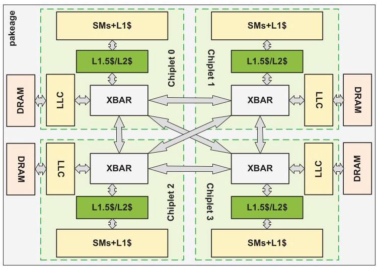
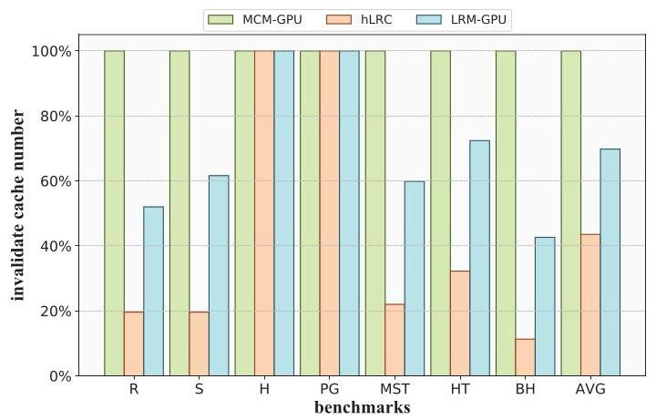
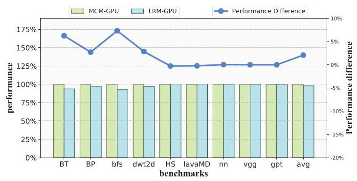
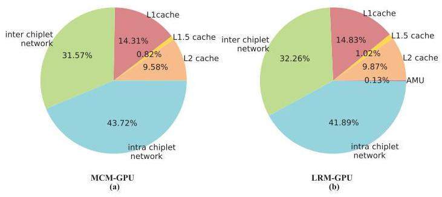

LRM-GPU: Alleviating Synchronization Overhead for Multi-Chiplet GPU Architecture
Baiqing Zhong \({}^{ \dagger }\) , Zhirong \({\mathrm{{Ye}}}^{ \dagger }\) , Xiaojie \({\mathrm{{Li}}}^{ \dagger }\) , Peilin Wang \({}^{ \dagger }\) , Haiqiu Huang \({}^{ \dagger }\) , Zhaolin \({\mathrm{{Li}}}^{ \ddagger }\) , Zhiyi \({\mathrm{{Yu}}}^{ \dagger }\) , and Mingyu Wang \({}^{\dagger , * }\)
钟柏清\({}^{ \dagger }\)，叶志荣\({}^{ \dagger }\)，李晓杰\({}^{ \dagger }\)，王培林\({}^{ \dagger }\)，黄海秋\({}^{ \dagger }\)，李兆麟\({}^{ \ddagger }\)，虞志益\({}^{ \dagger }\)，王明宇\({}^{\dagger , * }\)
\({}^{ \dagger }\) School of Microelectronics Science and Technology, Sun Yat-Sen University, China \({}^{ \ddagger }\) Department of Computer Science and Technology, Tsinghua University, China Email(s): {wangmingyu, yuzhiyi}@mail.sysu.edu.cn, lzl73@mail.tsinghua.edu.cn, {zhongbq, yezhr6, lixj263, wangplin, huanghq73}@mail2.sysu.edu.cn
\({}^{ \dagger }\) 中国中山大学微电子科学与技术学院 \({}^{ \ddagger }\) 中国清华大学计算机科学与技术系 电子邮箱：{wangmingyu, yuzhiyi}@mail.sysu.edu.cn, lzl73@mail.tsinghua.edu.cn, {zhongbq, yezhr6, lixj263, wangplin, huanghq73}@mail2.sysu.edu.cn
Abstract-With the slowdown of process scaling and the advancement of packaging technologies, multi-chiplet GPUs have emerged as a highly promising architecture to improve the scalability of GPU performance further. Moreover, requiring adherence to atomicity and memory consistency models for shared data efficient synchronization is crucial to leverage the performance advantages of the multi-chiplet GPU architecture. However, the memory systems of multi-chiplet GPUs introduce deeper cache hierarchies and increased non-uniformity, both of which significantly exacerbate the overhead of synchronization. Specifically, acquire/release synchronization operations should invalidate/flush caches, an overhead that is significantly increased by the presence of additional cache level, and atomic operations for synchronization performed across chiplets are further impacted by the limited bandwidth of inter-chiplet links.
摘要—随着工艺微缩的放缓与封装技术的进步，多芯粒GPU已成为进一步提升GPU性能可扩展性的极具前景的架构。此外，为高效同步共享数据而遵循原子性和内存一致性模型，对于发挥多芯粒GPU架构的性能优势至关重要。然而，多芯粒GPU的内存系统引入了更深的缓存层次和更大的非一致性，这两者都显著加剧了同步的开销。具体而言，获取/释放同步操作需要使缓存无效或刷新缓存，而额外缓存层级的存在显著增加了这一开销；跨芯粒执行的同步原子操作则进一步受到芯粒间互连有限带宽的影响。
To address these challenges, this paper proposes LRM-GPU to provide efficient synchronization support for multi-chiplet GPUs. In order to reduce the overhead caused by the additional cache level, LRM-GPU leverages lazy release consistency in multi-chiplet GPUs, whereby the additional level of cache only performs coherence actions when the ownership of synchronization variables changes between different chiplets. LRM-GPU also implements a directory in the last-level cache to track the synchronization variables. To mitigate the overhead of atomic operations for inter-chiplet synchronization under limited inter-chiplet bandwidth, LRM-GPU proposes an in-network synchronization atomic merging unit to merge atomic requests across chiplets, thereby reducing the inter-chiplet synchronization traffic of atomic operations. Experimental evaluation demonstrates that, compared with the MCM-GPU, LRM-GPU achieves an average speedup of \({1.33} \times\) . Moreover, compared with the state-of-the-art work HMG, it also achieves the speedup of \({1.22} \times\) , reduces \({52}\%\) of inter-chiplet traffic, and reduces 32% of energy consumption on average.
为应对这些挑战，本文提出 LRM-GPU，旨在为多芯粒 GPU 提供高效的同步支持。为降低额外缓存层级带来的开销，LRM-GPU 在多芯粒 GPU 中采用惰性释放一致性（lazy release consistency），即额外缓存层级仅在同步变量的所有权（ownership）在不同芯粒间转移时才执行一致性操作。LRM-GPU 还在末级缓存中实现了一个目录（directory）来追踪同步变量。为缓解有限片间互连带宽下跨片原子同步操作的开销，LRM-GPU 提出了一种网络内同步原子合并单元（in-network synchronization atomic merging unit），用于合并跨芯粒的原子请求，从而减少原子操作的片间同步流量。实验评估表明，与 MCM-GPU 相比，LRM-GPU 平均实现了 \({1.33} \times\) 的加速比。此外，与当前领先的工作 HMG 相比，它也实现了 \({1.22} \times\) 的加速比，平均减少了 \({52}\%\) 的片间流量和 32% 的能耗。
I. INTRODUCTION
Modern graphics processing units (GPUs) leverage the Single-Instruction-Multiple-Threads (SIMT) architecture to efficiently execute multiple concurrent threads, proving instrumental in diverse computational domains such as high-performance computing (HPC) and machine learning [6, 26, 35, 46, 50]. As the computational demands continue to increase, GPUs have leveraged shrinking process features to dramatically increase transistor density, while also manufacturing ever-larger dies to meet the strong scaling requirements of applications [30, 34, 36, 37]. However, as transistor scaling has slowed down and manufacture constraints the maximum die size, the scalability of GPU performance has become increasingly constrained [22, 23, 39]. These challenges have motivated researchers to explore alternative approaches to enhance the performance scalability of GPUs. Recent research has explored the composition of multiple smaller chips into a single large-scale, aggregated system, an approach commonly referred to as a Multi-Chip Module (MCM) or chiplet \(\left\lbrack {2,3,{15},{45}}\right\rbrack\) . The multi-chiplet GPU architecture distributes computational workloads across multiple GPU chiplets to enable scalable and efficient GPU design.
现代图形处理单元 (graphics processing units, GPUs) 利用单指令多线程 (Single-Instruction-Multiple-Threads, SIMT) 架构高效执行大量并发线程，在高性能计算 (high-performance computing, HPC) 和机器学习 (machine learning) 等多种计算领域发挥着关键作用 [6, 26, 35, 46, 50]。随着计算需求的持续增长，GPU 借助不断缩小的工艺特征大幅提升晶体管密度，同时制造越来越大的芯片以满足应用对强扩展性的要求 [30, 34, 36, 37]。然而，随着晶体管缩放速度放缓以及制造工艺对最大芯片尺寸的限制，GPU 性能的可扩展性日益受限 [22, 23, 39]。这些挑战促使研究人员探索提升 GPU 性能可扩展性的替代方案。近期研究探索了将多个较小芯片组合成单个大规模聚合系统的方法，该方法通常被称为多芯片模块 (Multi-Chip Module, MCM) 或芯粒 (chiplet) \(\left\lbrack {2,3,{15},{45}}\right\rbrack\)。多芯粒 GPU 架构将计算工作负载分布到多个 GPU 芯粒上，以实现可扩展且高效的 GPU 设计。

Fig. 1. Current GPU Architecture:(a)Monolithic GPU; (b)Multi-Chiplet GPU
图1. 当前GPU架构：(a) 单芯片GPU (Monolithic GPU); (b) 多芯粒GPU (Multi-Chiplet GPU)
However, as GPUs become increasingly general-purpose, they are also used for applications that require efficient support for more data sharing. Therefore, the critical aspect of showcasing multi-chiplet GPU advantages hinges on the strict adherence of all threads to efficient synchronization mechanisms [9, 27]. These mechanisms demand that shared data updates adhere to consistent access sequences and update protocols (i.e., ensuring consistency), while effectively managing conflicting accesses to uphold the deterministic nature of multi-threaded program execution (i.e., ensuring atomicity) [7, 17, 20]. Thus, the development of efficient synchronization mechanisms that uphold memory consistency and atomicity serves as an essential pillar for constructing high-performance multi-chiplet GPU architectures.
然而，随着 GPU 日益通用化，它们也被用于需要高效支持更多数据共享的应用。因此，展现多芯粒 GPU 优势的关键在于所有线程严格遵循高效的同步机制 (synchronization mechanisms) [9, 27]。这些机制要求共享数据更新遵循一致的访问顺序和更新协议（即确保一致性 (consistency)），同时有效管理冲突访问以维护多线程程序执行的确定性（即确保原子性 (atomicity)）[7, 17, 20]。因此，开发能够维护内存一致性 (memory consistency) 和原子性 (atomicity) 的高效同步机制，是构建高性能多芯粒 GPU 架构的重要基石。
GPUs were originally designed under the assumption that inter-thread synchronization would be coarse-grained and infrequent. As a result, they usually adopted a simple, software-driven coherence protocol[16, 18, 25, 38, 41, 47, 49]. As shown in Fig. 1 (a), in traditional GPUs, where L1 cache is private to Streaming Multiprocessors (SMs) and last level cache (LLC) is shared by all SMs which maintains a consistent view of data. These protocols typically invalidate all valid data from the local cache (L1 cache) at acquire operations and flush all dirty data from the local cache at release operations. And to ensure the atomicity and consistency of shared data, synchronization operations (usually atomic operations) were executed at the LLC (i.e., bypassing L1 caches).
GPU 最初的设计假设是线程间同步将是粗粒度且不频繁的。因此，它们通常采用一种简单的、软件驱动的一致性协议[16, 18, 25, 38, 41, 47, 49]。如图 1 (a) 所示，在传统 GPU 中，L1 缓存对流多处理器 (Streaming Multiprocessors, SMs) 是私有的，而末级缓存 (last level cache, LLC) 由所有 SM 共享，并维护数据的一致视图。这些协议通常在获取操作时使本地缓存（L1 缓存）中的所有有效数据失效，并在释放操作时将本地缓存中的所有脏数据刷新。为了确保共享数据的原子性和一致性，同步操作（通常是原子操作）在 LLC 中执行（即绕过 L1 缓存）。
*Corresponding author: Mingyu Wang.
*通讯作者：王明宇。
However, the changes in multi-chiplet GPU architectures have exacerbated the overhead of such synchronization mechanisms. One of the most notable characteristics of Multi-chiplet GPUs is the Non-Uniform Memory Access (NUMA) problem caused by the bandwidth mismatch between inter-chiplet and intra-chiplet. To mitigate the NUMA problem, multi-chiplet GPUs [2, 8, 29, 52] often incorporate an additional cache level within each chiplet to leverage intra-chiplet data locality and reduce remote accesses. However, this approach results in the globally shared ordering point being located at a lower level, necessitating the invalidation/flushing of the additional cache level during global synchronization. Meanwhile, since synchronization operations are typically executed in the LLC (bypassing other caches), the limited bandwidth of inter-chiplet links still significantly impedes the execution of cross-chiplet synchronization operations. Therefore, as illustrated in Fig. 1(b), the two critical bottlenecks for synchronization are the additional synchronization overhead introduced by the deeper cache hierarchy and the bandwidth limitation of inter-chiplet links for cross-chiplet synchronization operations.
然而，多芯粒（multi-chiplet）GPU 架构的变化加剧了此类同步机制的开销。多芯粒 GPU 最显著的特征之一是由片间（inter-chiplet）与片内（intra-chiplet）带宽不匹配所导致的非统一内存访问（Non-Uniform Memory Access, NUMA）问题。为缓解 NUMA 问题，多芯粒 GPU [2, 8, 29, 52] 通常在每个芯粒内部引入额外的缓存层级，以利用片内数据局部性并减少远程访问。然而，这种方法导致全局共享的定序点（ordering point）位于更低层级，从而在全局同步期间必须对额外的缓存层级进行无效化/刷新（invalidation/flushing）。同时，由于同步操作通常在末级缓存（LLC）中执行（绕过其他缓存），有限的片间互连带宽仍然严重阻碍了跨片同步操作的执行。因此，如图 1(b) 所示，同步的两个关键瓶颈是：更深的缓存层级引入的额外同步开销，以及跨片同步操作所面临的片间互连带宽限制。
To evaluate the impacts of the additional cache level and the limited inter-chiplet link bandwidth, we compared the workload performance of a 4-chiplet GPU system (as described in the section IV) with that of an equivalent but non-fabricable monolithic GPU. As illustrated in Fig. 2, these workloads involving global synchronization exhibit a significant performance degradation, with an average performance loss of 22.5% due to additional cache-level invalidations and 23.5% due to remote atomic accesses. Overall, the performance of the MCM-GPU decreases by an average of 50.5% compared to the monolithic GPU. These results indicate that efficient data synchronization represents a critical challenge in chiplet-based GPU systems.
为评估额外缓存层级和有限片间互连带宽的影响，我们将一个4芯粒GPU系统（如第四节所述）的工作负载性能与一个等效但不可流片的单体GPU进行了比较。如图2所示，这些涉及全局同步的工作负载表现出显著的性能下降，平均性能损失为22.5%源于额外的缓存级无效化，23.5%源于远程原子访问。总体而言，与单体GPU相比，MCM-GPU的性能平均下降了50.5%。这些结果表明，高效的数据同步是基于芯粒的GPU系统面临的一个关键挑战。
Previous research [2, 52, 53] on multi-chiplet GPUs has primarily explored mitigating the NUMA problem arising from bandwidth mismatches between inter-chiplet and intra-chiplet communication for regular data accesses, yet few have addressed the challenges of data synchronization in multi-chiplet GPUs. HMG [43] extends the coherence protocol to multi-chiplet and multi-GPU systems by hierarchically tracking sharers, confining cache invalidation and flushing to the L1 cache level due to the maintenance of the coherence protocol. However, we observe that the complexity of HMG is unnecessary and can sometimes impair performance. CPElide [8] leverages the common processor to track data structures sent to each chiplet, but it focuses on implicit synchronization to exploit inter-kernel data reuse, rather than optimizing explicit synchronization in GPUs.
先前针对多芯粒GPU的研究 [2, 52, 53] 主要探索了如何缓解因片间与片内通信带宽不匹配而导致的常规数据访问非统一内存访问 (NUMA) 问题，但鲜有工作涉及多芯粒GPU中的数据同步挑战。HMG [43] 通过分层追踪共享者，将一致性协议扩展至多芯粒和多GPU系统，并出于维护一致性协议的需要，将缓存无效化 (cache invalidation) 和刷新 (flushing) 操作限制在L1缓存级别。然而，我们观察到HMG的复杂性并非必要，有时甚至会损害性能。CPElide [8] 利用通用处理器来追踪发送至每个芯粒的数据结构，但其关注点在于利用隐式同步 (implicit synchronization) 来发掘内核间数据重用，而非优化GPU中的显式同步 (explicit synchronization)。
![Fig. 2. Performance loss in MCM-GPU[2] versus equivalent monolithic GPU due to synchronization overhead from additional cache level and remote access (experiments are introduced in detail in section IV).](../images/fig02.jpg)
Fig. 2. Performance loss in MCM-GPU[2] versus equivalent monolithic GPU due to synchronization overhead from additional cache level and remote access (experiments are introduced in detail in section IV).
图2. 多芯粒GPU (MCM-GPU)[2] 相对于等效单体GPU (monolithic GPU) 的性能损失，这是由于额外缓存层级和远程访问带来的同步开销（实验将在第四节详细介绍）。
To address these challenges, this paper proposes LRM-GPU to alleviate the synchronization overhead introduced by the additional cache hierarchy and the limited bandwidth of inter-chiplet links. The main insight of LRM-GPU is to leverage the locality among synchronization. Firstly, the locality of synchronization behavior, when a synchronization operation is performed within a chiplet, it is likely that a subsequent synchronization operation will also occur on the same chiplet. Therefore, compared to conservatively invalidating or flushing caches on every synchronization operation, a more positive strategy can be adopted to selectively perform cache invalidation and flushing at appropriate times, thereby improving reuse and reducing synchronization overhead. Secondly, the locality of synchronization data, although atomic operations for synchronization in GPUs are typically bypassed directly to the LLC for execution, cross-chiplet atomic operations issued by different SMs may simultaneously access the same address. Therefore, we can attempt to merge these atomic operations when these operations are sent to the network, thereby reducing inter-chiplet traffic and alleviating the bandwidth pressure between chiplets. In this paper, we make the following contributions:
为应对这些挑战，本文提出 LRM-GPU，旨在缓解由额外缓存层级和有限片间互连带宽所引入的同步开销。LRM-GPU 的核心思路是利用同步中的局部性。首先，同步行为的局部性：当某个同步操作在单个芯粒内执行时，后续的同步操作很可能也发生在同一芯粒上。因此，相较于在每次同步操作时都保守地执行缓存无效化或刷新，可以采取更积极的策略，在适当时机选择性地进行缓存无效化和刷新，从而提升重用并降低同步开销。其次，同步数据的局部性：尽管 GPU 中用于同步的原子操作通常直接绕过缓存到达末级缓存 (LLC) 执行，但不同流多处理器 (SM) 发出的跨片原子操作可能同时访问同一地址。因此，我们可以尝试在这些操作发送到网络时将其合并，从而减少片间流量，缓解芯粒间的带宽压力。本文做出以下贡献：
1) To mitigate the synchronization overhead caused by the additional cache level, LRM-GPU proposes an efficient synchronization support by leveraging lazy release consistency in multi-chiplet GPUs. LRM-GPU ensures that coherence actions of the additional cache level are only performed when ownership of synchronization variables is transferred between different chiplets, thereby leveraging the locality of intra-chiplet synchronization and reducing redundant cache invalidations and flushes. And to track the ownership of synchronization variables, LRM-GPU implements a directory in the LLC.
1) 为缓解额外缓存层级带来的同步开销，LRM-GPU 通过在多芯粒 GPU 中利用惰性释放一致性（lazy release consistency），提出了一种高效的同步支持。LRM-GPU 确保仅在同步变量的所有权在不同芯粒间转移时，才执行额外缓存层级的一致性操作，从而利用片内同步的局部性，减少冗余的缓存无效化和刷新操作。为追踪同步变量的所有权，LRM-GPU 在末级缓存（LLC）中实现了一个目录。
2) To mitigate the overhead of inter-chiplet bandwidth limitation encountered when synchronization operations are executed across different chiplets, LRM-GPU proposes in-network atomic merge for synchronization. It embeds a synchronization atomic merging unit within the network. It identifies atomic operations that are being transmitted across chiplets and performs merging processing. By merging these atomic operations at the network, it effectively reduces the traffic of synchronization operations that need to be transmitted across chiplets and alleviates the bandwidth pressure among chiplets.
2) 为缓解跨不同芯粒（chiplet）执行同步操作时遇到的片间（inter-chiplet）带宽限制开销，LRM-GPU 提出了网络内原子合并（in-network atomic merge）同步机制。它在网络中嵌入了一个同步原子合并单元（synchronization atomic merging unit），能够识别正在跨芯粒传输的原子操作并执行合并处理。通过将原子操作在网络中进行合并，有效减少了需要跨芯粒传输的同步操作流量，缓解了芯粒间的带宽压力。
3) To evaluate the proposed LRM-GPU, we faithfully extended GPGPU-SIM for the multi-chiplet GPU system, including composable network construction and heterogeneous router/crossbar microarchitectures. We have demonstrated the effectiveness of LRM-GPU through a set of detailed experiments conducted on programs with global synchronization. The evaluation results indicate that, compared to MCM-GPU, LRM-GPU achieves an average speedup of \({1.33} \times\) . Moreover, compared to the state-of-the-art work HMG, LRM-GPU also achieves an average speedup of \({1.22} \times\) .
3) 为评估所提出的 LRM-GPU，我们针对多芯粒 GPU 系统忠实地扩展了 GPGPU-SIM，包括可组合的网络构建 (composable network construction) 和异构路由器/交叉开关微架构 (heterogeneous router/crossbar microarchitectures)。我们通过在具有全局同步 (global synchronization) 的程序上进行一系列详细实验，验证了 LRM-GPU 的有效性。评估结果表明，与 MCM-GPU 相比，LRM-GPU 平均实现了 \({1.33} \times\) 的加速比 (speedup)。此外，与当前领先的工作 HMG 相比，LRM-GPU 也平均实现了 \({1.22} \times\) 的加速比。
II. BACKGROUND AND MOTIVATION
A. Multi-Chiplet GPU Architecture
A. 多芯粒 GPU 架构 (Multi-Chiplet GPU Architecture)

Fig. 3. Multi-Chiplet GPU architecture. Multiple GPU chiplets are used to build a larger logical single GPU.
图3. 多芯粒GPU架构 (Multi-Chiplet GPU architecture)。多个GPU芯粒 (GPU chiplets) 被用来构建一个更大的逻辑单一GPU (logical single GPU)。
Fig. 3 illustrates the architecture of a 4-chiplet GPU. Each GPU chiplet contains multiple SMs along with their private L1 cache, as well as a memory-side LLC and a memory partition. All memory partitions offer a globally shared memory address space across all GPU chiplets. The network route memory accesses to the appropriate destination (either the local LLC or the remote LLC) based on the address. The LLC, which is shared by all SMs across the chiplets, exclusively caches data from its local DRAM partition. Consequently, each cache line has only one location, and cache coherence across LLC banks is not required.
图3展示了一个4芯粒GPU的架构。每个GPU芯粒包含多个流式多处理器（SM）及其私有的L1缓存，以及一个内存侧末级缓存（LLC）和一个内存分区。所有内存分区在所有GPU芯粒间提供一个全局共享的内存地址空间。网络根据地址将内存访问路由到适当的目的地（本地LLC或远程LLC）。LLC由所有芯粒上的SM共享，专门缓存其本地DRAM分区中的数据。因此，每个缓存行只有一个位置，且LLC各存储体之间不需要缓存一致性。
Unlike conventional monolithic GPUs, multi-chiplet GPUs often introduce an additional cache level shared within each chiplet to alleviate the NUMA problem caused by bandwidth mismatch between intra-chiplet and inter-chiplet. MCM-GPU [2] uses an L1.5 cache to only cache data from remote chipsets in order to better utilize the data locality within chiplets. In this design, when an L1 miss occurs and data needs to be fetched from the remote chiplet, the request first accesses the L1.5 cache. If the L1.5 cache also misses, the request is routed to the appropriate LLC and memory partition according to the address mapping policy. The results of MCM-GPU also indicate that the L1.5 cache can achieve good performance. CPELide [8] uses an L2 cache as the shared cache level within a chiplet to exploit the locality of data within chiplets, and the L3 cache (also the LLC) is the global shared cache across all chiplets. Some studies [43, 52] did not add a new cache level, but used LLC (also the L2 cache) on the SM-side, where each chiplet's LLC caches data from all DRAM partitions globally.
与传统的单片GPU不同，多芯粒GPU通常会在每个芯粒内部引入一个额外的共享缓存层级，以缓解由片内与片间带宽不匹配所导致的非统一内存访问（NUMA）问题。MCM-GPU [2] 使用了一个L1.5缓存，仅用于缓存来自远程芯粒的数据，以便更好地利用芯粒内部的数据局部性。在该设计中，当发生L1缺失且需要从远程芯粒获取数据时，请求会首先访问L1.5缓存。如果L1.5缓存也未命中，则根据地址映射策略将请求路由到相应的末级缓存（LLC）和内存分区。MCM-GPU的结果也表明，L1.5缓存能够取得良好的性能。CPELide [8] 使用L2缓存作为芯粒内的共享缓存层级，以利用芯粒内部的数据局部性，而L3缓存（也是末级缓存）则是跨所有芯粒的全局共享缓存。一些研究 [43, 52] 并未增加新的缓存层级，而是在流多处理器（SM）侧使用末级缓存（同时也是L2缓存），其中每个芯粒的末级缓存会全局缓存来自所有动态随机存取存储器（DRAM）分区的数据。
Prior research has mainly focused on mitigating the bandwidth constraints between different chiplets due to the limited bandwidth of inter-chiplet links in multi-chiplet GPUs for regular data accesses. As mentioned above, adding an additional cache level or employing SM-side LLCs aims to exploit intra-chiplet data locality to reduce remote accesses. MCM-GPU [2] also proposes the first-touch-page and distributed cooperative thread arrays (CTA) scheduling strategies to increase and leverage data locality within a chiplet. AdCoalescer [53] introduces an adaptive coalescer that uses program counter (PC) values to identify memory requests with high data locality and filter redundant remote reads. Nearfetch [55] targets many-chiplet GPU architectures and proposes fetching data from nearby chiplets to reduce long-distance data transfers.
先前的研究主要集中于缓解多芯粒GPU中因片间互连（inter-chiplet links）带宽有限而导致的常规数据访问（regular data accesses）带宽约束。如上所述，增加额外缓存层级或采用SM侧末级缓存（LLC）旨在利用片内数据局部性（intra-chiplet data locality）以减少远程访问（remote accesses）。MCM-GPU [2] 还提出了首次接触页（first-touch-page）和分布式协作线程阵列（distributed cooperative thread arrays, CTA）调度策略，以增强并利用芯粒内的数据局部性。AdCoalescer [53] 引入了一种自适应合并器（adaptive coalescer），利用程序计数器（program counter, PC）值识别具有高数据局部性的内存请求（memory requests），并过滤冗余的远程读取（redundant remote reads）。Nearfetch [55] 针对多芯粒GPU架构（many-chiplet GPU architectures），提出从邻近芯粒获取数据以减少长距离数据传输（long-distance data transfers）。
While these approaches alleviate the general NUMA issues of regular data accesses, they overlook memory access caused by atomic operations for synchronization and the additional overhead brought by synchronization behavior.
尽管这些方法缓解了常规数据访问的普遍非统一内存访问（NUMA）问题，但它们忽略了由用于同步的原子操作引起的内存访问以及同步行为带来的额外开销。
B. Synchronization Challenges in Multi-Chiplet GPUs
GPUs were originally designed under the assumption that inter-thread synchronization would be coarse-grained and infrequent. As a result, GPUs often adopt simple, coarse-grained, software-managed coherence protocols. These protocols typically require that private caches be invalidated/flushed upon acquire/release operations, while atomic operations for synchronization are usually performed directly in the LLC.
GPU 最初的设计假设是线程间同步是粗粒度且不频繁的。因此，GPU 通常采用简单、粗粒度、由软件管理的一致性协议。这些协议通常要求在获取/释放操作时对私有缓存进行无效化/刷新，而用于同步的原子操作则通常在末级缓存（LLC）中直接执行。
However, in order to alleviate the NUMA problem in multi-chiplet GPUs, multi-chiplet GPU architecture often adds an additional cache level or uses SM-side LLC to utilize the data locality within the chiplet and reduce remote memory access. These changes in multi-chiplet GPU architectures have exacerbated the synchronization overhead. In particular, whether using an additional cache level or the SM-side LLC, they will all cause the lower global shared ordering point and require maintaining data consistency across multiple levels of the cache hierarchy, leading to more expensive synchronization overhead. For example, when a SM issues an acquire synchronization request, since the L1 and L1.5 caches are private caches within the SM and the chiplet respectively, they may cache stale data. Therefore, it is necessary to invalidate the data in both the L1 and L1.5 cache to ensure that subsequent memory accesses can obtain the latest data from the globally shared LLC. Compared to the monolithic GPU, the multi-chiplet GPU requires the additional invalidation of the L1.5 cache. Given that the capacity of the L1.5 cache is typically larger than that of the L1 cache private to a single SM, and that the L1.5 cache is shared by all SMs within the chiplet, invalidating the L1.5 cache incurs greater overhead compared to invalidating only the L1 cache and also affects memory accesses from other SMs.
然而，为了缓解多芯粒GPU中的NUMA（非统一内存访问）问题，多芯粒GPU架构通常会添加额外的缓存层级或使用SM（流多处理器）侧LLC（末级缓存），以利用芯粒内的数据局部性并减少远程内存访问。这些多芯粒GPU架构的变化加剧了同步开销。特别是，无论是使用额外的缓存层级还是SM侧LLC，它们都会导致更低的全局共享排序点，并要求在多个缓存层级之间维护数据一致性，从而带来更高的同步开销。例如，当SM发出获取同步请求时，由于L1和L1.5缓存分别是SM和芯粒内部的私有缓存，它们可能缓存了陈旧数据。因此，需要同时无效化L1和L1.5缓存中的数据，以确保后续内存访问能从全局共享的LLC中获取最新数据。与单芯片GPU相比，多芯粒GPU需要额外无效化L1.5缓存。鉴于L1.5缓存的容量通常大于单个SM私有的L1缓存，且L1.5缓存由芯粒内的所有SM共享，与仅无效化L1缓存相比，无效化L1.5缓存会带来更大的开销，同时也会影响其他SM的内存访问。
In addition, to ensure atomicity and consistency, atomic operations for synchronization on GPUs are typically executed in the globally shared LLC, and synchronization data is not cached in the L1 and L1.5 caches. This renders the additional cache level ineffective in reducing cross-chiplet atomic operations for synchronization. When it comes to global atomic operations that cross different chiplets, the limitation imposed by inter-chiplet bandwidth becomes a pronounced bottleneck. The need to frequently communicate and synchronize data across chiplets via a potentially constrained bandwidth link can significantly hinder performance, especially in scenarios involving frequent atomic operations for synchronization. Therefore, for global atomic operations for synchronization, the limitation of inter-chiplet bandwidth remains a significant challenge.
此外，为确保原子性和一致性，GPU 上用于同步的原子操作通常在全局共享的末级缓存（LLC）中执行，同步数据不会缓存在 L1 和 L1.5 缓存中。这使得额外的缓存层级在减少跨芯粒同步原子操作方面无效。当涉及跨不同芯粒的全局原子操作时，片间带宽的限制成为一个显著的瓶颈。通过可能受限的带宽链路频繁跨芯粒通信和同步数据的需求会严重阻碍性能，尤其是在涉及频繁同步原子操作的场景中。因此，对于用于同步的全局原子操作，片间带宽的限制仍然是一个重大挑战。
C.To Alleviate the Synchronization Overhead
To improve synchronization performance, prior work has actively explored GPU synchronization mechanisms.
为提升同步性能，已有研究积极探索了GPU同步机制。
DeNovo [47] introduced the DeNovo consistency protocol into GPUs, achieving synchronization by acquiring ownership of the written data. Furthermore, it enhanced DeNovo by adding a selective invalidation mechanism, which can avoid invalidating read-only data regions during synchronization, thereby further optimizing performance. hLRC [1] introduced a mechanism similar to DeNovo to track the ownership of synchronization variables and only performed coherence operations when synchronization variables resided in different L1 caches. However, each time a synchronization operation for the same variable was performed in a different SM, they first needed to invalidate or flush the copies cached in remote L1 caches, to guarantee atomicity and consistency of the synchronization variables. This incurred significant overhead in maintaining atomicity and consistency of synchronization variables across different cache levels. In multi-chiplet GPUs, due to deeper cache hierarchies, this overhead is greatly amplified and can severely degrade performance. Moreover, LAB [10] proposes utilizing a portion of the L1 cache as an atomic buffer to cache atomic data, thereby reducing atomic synchronization traffic sent over the network. Atomic Cache [54] suggests implementing the atomic operations through in-cache computing, thus mitigating synchronization overhead. ARC[11] recommends leveraging the warp-level locality of atomic operations to merge atomic operations in a warp, aiming to alleviate the pressure on the load-store unit and the LLC. However, all of these approaches overlook the inter-SM locality inherent in atomic operations for synchronization.
DeNovo [47] 将 DeNovo 一致性协议（DeNovo consistency protocol）引入 GPU，通过获取已写入数据的所有权来实现同步。此外，它通过增加选择性失效机制（selective invalidation mechanism）对 DeNovo 进行了增强，该机制可在同步期间避免对只读数据区域进行失效操作，从而进一步优化性能。hLRC [1] 引入了一种与 DeNovo 类似的机制来跟踪同步变量（synchronization variables）的所有权，并仅在同步变量位于不同的 L1 缓存中时才执行一致性操作。然而，每当在不同 SM 上对同一变量执行同步操作时，它们首先需要失效或刷新远程 L1 缓存中缓存的副本，以保证同步变量的原子性和一致性。这在跨不同缓存层级维护同步变量的原子性和一致性时带来了显著开销。在多芯粒 GPU 中，由于缓存层次更深，这种开销被大幅放大，并可能严重降低性能。此外，LAB [10] 提出将部分 L1 缓存用作原子缓冲区（atomic buffer）来缓存原子数据，从而减少通过网络发送的原子同步流量。Atomic Cache [54] 建议通过缓存内计算（in-cache computing）实现原子操作，从而减轻同步开销。ARC [11] 建议利用原子操作的线程束级局部性（warp-level locality）来合并一个线程束内的原子操作，旨在缓解加载存储单元（load-store unit）和末级缓存（LLC）的压力。然而，所有这些方法都忽略了用于同步的原子操作中固有的 SM 间局部性（inter-SM locality）。
For multi-chiplet GPUs, HMG[43] extended the cache coherence protocol to multi-chiplet GPUs and multi-GPUs, using a mechanism similar to the VI protocol to track coherence states. By employing an optimized hierarchical sharer-tracking scheme, it alleviated synchronization overhead. HMG leveraged the scopes of modern GPU memory models and the nonmultiple-copy-atomicity characteristic to avoid the overhead of invalidation acknowledgments and transient states, thereby achieving relatively favorable results. CPElide[8] proposed a new command processor (CP) design, which, by leveraging the global view of the GPU's CP, could selectively decide when to perform implicit inter-kernel synchronization operations. This ensured data was invalidated or flushed before being used, improving data reuse and reducing the overhead of implicit synchronization. However, CPElide lacks efficient support for explicit intra-kernel synchronization.
针对多芯粒GPU，HMG[43]将缓存一致性协议扩展至多芯粒GPU和多GPU，采用类似VI协议的机制来追踪一致性状态。通过使用优化的分层共享者跟踪方案，它缓解了同步开销。HMG利用现代GPU内存模型的作用域（scopes）和非多副本原子性（nonmultiple-copy-atomicity）特性，避免了无效化确认（invalidation acknowledgments）和瞬态（transient states）的开销，从而取得了相对较好的结果。CPElide[8]提出了一种新的命令处理器（command processor, CP）设计，通过利用GPU CP的全局视图，可以选择性地决定何时执行隐式内核间同步操作。这确保了数据在使用前被无效化或刷新，提高了数据重用性并减少了隐式同步的开销。然而，CPElide缺乏对显式内核内同步的高效支持。
III. PROPOSED METHODOLOGY
A. Overview
To mitigate the synchronization overhead caused by the additional cache level and the limited bandwidth of inter-chiplet interconnects, this paper proposes LRM-GPU, which provides efficient synchronization support for multi-chiplet GPUs. Fig. 4 presents an architectural overview of the proposed LRM-GPU design.
为了缓解由额外缓存层级和片间互连有限带宽引起的同步开销，本文提出了LRM-GPU，为多芯粒GPU提供高效的同步支持。图4展示了所提出的LRM-GPU设计的架构概览。

Fig. 4. Overview of LRM-GPU Architecture
图4. LRM-GPU架构概览
LRM-GPU leverages lazy release consistency to mitigate the expensive global synchronization overhead introduced by the additional cache level in multi-chiplet GPU architectures. LRM-GPU associates each synchronization variable with the chiplet that last accessed it. Coherence actions (invalidate/flush cache) are only triggered when the owner of the synchronization variable is transferred between different chiplets, as this indicates the possibility of synchronization between different chiplets. By adopting this approach, LRM-GPU achieves lazy release, thereby leveraging the locality of intra-chiplet synchronization and reducing redundant cache invalidations and flushes. In order to track the ownership of synchronization variables across chiplets, as shown in Fig. 4, LRM-GPU implements a directory at the LLC. Since the directory only monitors synchronization variables rather than all data, its capacity requirements remain modest. LRM-GPU is similar to traditional monolithic GPU designs that recommend all synchronization operations be bypassed to the LLC. This design ensures that synchronization variables are never cached in the local cache, thereby eliminating the presence of inconsistent replicas and avoiding the costly coherence maintenance for atomicity and consistency across the multi-chiplet cache hierarchy.
LRM-GPU 利用惰性释放一致性（lazy release consistency）来缓解多芯粒 GPU 架构中因额外缓存层级而引入的高昂全局同步开销。LRM-GPU 将每个同步变量与最后访问它的芯粒关联起来。仅当同步变量的所有权在不同芯粒间转移时，才会触发一致性操作（缓存无效化/刷新），因为这表明不同芯粒之间可能发生同步。通过采用这种方法，LRM-GPU 实现了惰性释放，从而利用了片内同步的局部性，并减少了冗余的缓存无效化和刷新操作。为了跨芯粒追踪同步变量的所有权，如图 4 所示，LRM-GPU 在末级缓存（LLC）中实现了一个目录。由于该目录仅监控同步变量而非所有数据，其容量需求保持适中。LRM-GPU 类似于传统的单体 GPU 设计，建议所有同步操作都绕过本地缓存直接访问 LLC。这种设计确保同步变量永远不会被缓存在本地缓存中，从而消除了不一致副本的存在，并避免了为跨多芯粒缓存层次结构的原子性和一致性而进行的昂贵一致性维护。
The performance of atomic operations for synchronization is inherently limited by the inter-chiplet communication bandwidth since they bypass local caches and are directly routed to the LLC via the network. To alleviate this bottleneck, LRM-GPU introduces in-network atomic merge mechanism and embeds a synchronization atomic merging unit (AMU) within the network, as shown in Fig. 4. AMU identifies and merges atomic requests that traverse chiplet boundaries, thereby reducing inter-chiplet traffic. For example, in lock-based synchronization implemented via atomicCAS, multiple SMs may issue atomicCAS targeting the same data to acquire the lock. Since only one of these requests can successfully acquire the lock while the others fail and spin, these requests can be merged into a single transmission across chiplets. Similarly, in programs using atomicAdd to synchronize updates of shared variables, such as two atomicAdd(x, 1) can be merged into a single atomicAdd(x, 2). By merging such synchronization atomic operations, AMU significantly alleviates inter-chiplet bandwidth pressure.
用于同步的原子操作的性能本质上受限于跨芯粒（inter-chiplet）通信带宽，因为它们会绕过本地缓存，直接通过网络路由至末级缓存（LLC）。为缓解这一瓶颈，LRM-GPU 引入了网络内原子合并机制，并在网络中嵌入了同步原子合并单元（AMU），如图 4 所示。AMU 能够识别并合并跨越芯粒边界的原子请求，从而减少跨芯粒流量。例如，在通过 atomicCAS 实现的基于锁的同步中，多个流多处理器（SM）可能发出针对同一数据的 atomicCAS 以获取锁。由于这些请求中只有一个能成功获取锁，其余均会失败并自旋，因此这些请求可被合并为一次跨芯粒传输。类似地，在使用 atomicAdd 同步共享变量更新的程序中，例如两个 atomicAdd(x, 1) 可被合并为单个 atomicAdd(x, 2)。通过合并此类同步原子操作，AMU 显著缓解了跨芯粒带宽压力。
B. Lazy Release Consistency on Multi-Chiplet GPU
B. 多芯粒GPU上的惰性释放一致性 (Lazy Release Consistency on Multi-Chiplet GPU)
TABLE I
表 I
COHERENCE ACTIONS OF LRM-GPU
LRM-GPU 的一致性操作 (Coherence Actions)
| status | action | |
| acquire synchronization | invalid | LD data from LLC invalidate L1.5\$ |
| local chiplet | set owner & LD data from LLC | |
| remote chiplet | flush remote L1.5\$ (if write-back) set owner & LD data from LLC invalidate L1.5\$ | |
| evicte | flush owner's L1.5\$ (if write-back) set owner & LD data from LLC invalidate L1.5\$) | |
| release synchronization | invalid | ST data to LLC invalidate L1.5\$ |
| local chiplet | set owner & ST data to LLC | |
| remote chiplet | flush remote L1.5\$ (if write-back) set owner & ST data to LLC invalidate L1.5\$ | |
| evicte | flush owner's L1.5\$ (if write-back) set owner & ST data to LLC invalidate L1.5\$ |
LRM-GPU leverages lazy release consistency to achieve efficient synchronization. It tracks the owner of synchronization variables through a directory and performs corresponding coherence actions only when the owner changes occur between different chiplets. Table I specifically illustrates how LRM-GPU implements synchronization operations. We focus on the coherence actions related to synchronization in the additional cache level of multi-chiplet GPUs (L1.5 cache), while disregarding the coherence actions of the L1 cache, as it remains consistent with that of traditional GPUs.
LRM-GPU利用惰性释放一致性（lazy release consistency）来实现高效同步。它通过目录（directory）跟踪同步变量的所有者，并仅在所有者变更发生在不同芯粒（chiplets）之间时执行相应的一致性操作（coherence actions）。表I具体展示了LRM-GPU如何实现同步操作。我们关注多芯粒GPU的额外缓存层级（L1.5缓存）中与同步相关的一致性操作，而忽略L1缓存的一致性操作，因为它与传统GPU保持一致。
When an acquire operation accesses a synchronization variable, it may encounter four scenarios:
当获取操作 (acquire operation) 访问同步变量时，可能会遇到四种情况：
(1) Invalid: There is no record of the current synchronization variable in the directory, and there are free entries. The directory allocates an entry for this synchronization variable to track its owner. Meanwhile, the acquire operation reads data from the LLC. Finally, it invalidates the local L1.5 cache to ensure that subsequent memory access can read the globally latest data.
（1）无效（Invalid）：目录（directory）中没有当前同步变量（synchronization variable）的记录，且存在空闲条目。目录为该同步变量分配一个条目以跟踪其所有者（owner）。同时，获取操作（acquire operation）从末级缓存（LLC）读取数据。最后，它使本地L1.5缓存（L1.5 cache）无效，以确保后续内存访问能读取到全局最新数据。
(2) Local chiplet: The directory has a record of the current synchronization variable, and the recorded owner is the chiplet that issued the synchronization operation request. The acquire operation directly reads data from the LLC without performing any coherence actions. This is because it indicates that there is no inter-chiplet synchronization, and the latest data is cached in the local L1.5 cache.
(2) 本地芯粒 (Local chiplet)：目录中存有当前同步变量 (synchronization variable) 的记录，且记录的拥有者 (owner) 正是发出同步操作请求的芯粒。获取操作 (acquire operation) 直接从末级缓存 (LLC) 读取数据，无需执行任何一致性操作 (coherence actions)。这是因为该情况表明不存在片间同步 (inter-chiplet synchronization)，最新数据已缓存在本地 L1.5 缓存 (L1.5 cache) 中。
(3) Remote chiplet: The directory has a record of the current synchronization variable, but the recorded owner is not the chiplet that issued the synchronization operation request. If the L1.5 cache adopts a write-back policy, the remote L1.5 cache is first flushed to write the dirty data back to the LLC. Then, the directory updates the owner to the local chiplet. Simultaneously, the acquire operation reads data from the LLC. Finally, it invalidates the local L1.5 cache to ensure that subsequent memory access operations can read the globally latest data.
(3) 远程芯粒 (Remote chiplet)：目录 (directory) 中存有当前同步变量 (synchronization variable) 的记录，但记录的所有者并非发出同步操作请求的芯粒。若 L1.5 缓存采用写回策略 (write-back policy)，则首先将远程 L1.5 缓存刷新，将脏数据 (dirty data) 写回末级缓存 (LLC)。随后，目录将所有者更新为本地芯粒。同时，获取操作 (acquire operation) 从 LLC 中读取数据。最后，它使本地 L1.5 缓存无效化 (invalidate)，以确保后续内存访问操作能读取到全局最新数据。
(4) Evicted: There is no record of the current synchronization variable in the directory, and no free entry. The directory evicts an entry according to a policy such as Least Recently Used (LRU). It is necessary to flush the L1.5 cache of the chiplet that owns the evicted entry to ensure that subsequent memory access operations do not read old data (if write-back policy). At the same time, the directory allocates an entry for the current synchronization operation and records its current owner. Then, the acquire operation reads data from the LLC. Finally, it invalidates the local L1.5 cache.
(4) 已逐出 (Evicted)：目录中不存在当前同步变量的记录，且无空闲条目。目录根据最近最少使用 (Least Recently Used, LRU) 等策略逐出一个条目。此时需要刷新拥有该被逐出条目的芯粒的 L1.5 缓存，以确保后续内存访问操作不会读取到旧数据（若采用写回策略）。同时，目录为当前同步操作分配一个条目，并记录其当前所有者。随后，获取操作从末级缓存 (LLC) 读取数据。最后，它使本地 L1.5 缓存无效。

Fig. 5. Example of LRM-GPU synchronization behavior.
图5. LRM-GPU同步行为示例。
The release operation is similar to the acquire operation: (1) Invalid: The directory allocates an entry track for its owner. Simultaneously, the release operation writes the data into the LLC. Finally, it invalidates the local L1.5 cache to ensure that any subsequent acquire operations can achieve correct synchronization. (2) Local chiplet: The release operation merely writes the data into the LLC, as coherence actions are delayed until a subsequent change in the owner of the synchronization variable to leverage the locality of intra-chiplet synchronization. (3) Remote chiplet: the remote chiplet's L1.5 cache is first flushed (if write-back policy). Subsequently, the directory updates the owner. Meanwhile, the release operation writes the data into the LLC. Finally, it invalidates the local L1.5 cache. (4) Evicted: it needs to flush the L1.5 cache of the chiplet that owns the evicted entry (if write-back policy). At the same time, the directory allocates an entry for the current synchronization variable and records its current owner. And the release operation write data to the LLC. Finally, it invalidates the local L1.5 cache.
释放操作与获取操作类似：（1）无效（Invalid）：目录为其所有者分配一个条目跟踪。同时，释放操作将数据写入末级缓存（LLC）。最后，它使本地L1.5缓存失效，以确保后续任何获取操作都能实现正确的同步。（2）本地芯粒（Local chiplet）：释放操作仅将数据写入LLC，因为一致性操作被延迟到同步变量所有者后续发生变更时，以利用片内同步的局部性。（3）远程芯粒（Remote chiplet）：首先刷新远程芯粒的L1.5缓存（若采用写回策略）。随后，目录更新所有者。同时，释放操作将数据写入LLC。最后，它使本地L1.5缓存失效。（4）已逐出（Evicted）：需要刷新拥有被逐出条目的芯粒的L1.5缓存（若采用写回策略）。同时，目录为当前同步变量分配一个条目并记录其当前所有者。释放操作将数据写入LLC。最后，它使本地L1.5缓存失效。

Fig. 6. Comparison of execution flow and implementation between MCM-GPU and LRM-GPU:(a) MCM-GPU; (b) LRM-GPU
图6. MCM-GPU与LRM-GPU的执行流程与实现对比：(a) MCM-GPU；(b) LRM-GPU
For better understanding, Fig. 5 presents an example of the synchronization execution flow in a lock-based synchronization program. In this example, threads from three SMs are competing for lock synchronization, where SM0 and SM1 are on chiplet0, and SM2 is on chiplet1. Their execution order is SM0 \(\rightarrow\) SM1 \(\rightarrow\) SM2. Here, we also ignore discussions on L1 cache coherence actions and focus on L1.5 cache coherence actions, assuming that the L1.5 cache employs a write-back policy since it is more complex than the write-through policy.
为便于理解，图5展示了一个基于锁的同步程序中同步执行流程的示例。在此示例中，来自三个流多处理器 (Streaming Multiprocessor, SM) 的线程正在竞争锁同步，其中 SM0 和 SM1 位于芯粒0 (chiplet0) 上，SM2 位于芯粒1 (chiplet1) 上。它们的执行顺序为 SM0 \(\rightarrow\) SM1 \(\rightarrow\) SM2。此处，我们同样忽略对一级缓存 (L1 cache) 一致性操作的讨论，而聚焦于1.5级缓存 (L1.5 cache) 一致性操作，并假设 L1.5 缓存采用写回策略 (write-back policy)，因为该策略比写直达策略 (write-through policy) 更为复杂。
Initially, SM0 successfully acquires the lock (where the atomicCAS operation is directly executed in the LLC). It then issues an acquire synchronization to read the synchronization variable \(\mathrm{X}\) from the LLC a0. Since there is no record of synchronization variable \(\mathrm{X}\) in the directory, the L1.5 cache needs to be invalidated to ensure that SM0 can read the latest data to). Additionally, the owner of X in the directory is set to chiplet0. Subsequently, SM0 performs load/store operations on data A 60. At this point, the L1.5 cache of chiplet0 holds the latest data for A, with A=1, while the LLC contains the stale data, A=0. Finally, SM0 executes the release operation, directly writing the data of X into the LLC co). Since there is a record of \(\mathrm{X}\) in the directory and its owner is chiplet0, no coherence actions are required. Coherence actions will be delayed until the owner of the synchronization variable X changes. Next, SM1 acquires the lock and issues an acquire synchronization request a). Since the owner of X is chiplet0, it indicates that the latest data resides in chiplet0, and there is no need to invalidate the L1.5 cache. SM1 then performs load/store operations on data A 61, with chiplet0 holding the latest data, A=2. Finally, SM1 executes a release operation co), again without performing any coherence actions. Subsequently, SM2 on chiplet1 acquires the lock and issues an acquire synchronization request a2. Since the recorded owner of the synchronization variable \(\mathrm{X}\) in the directory is chiplet0 at this time, the L1.5 cache of chiplet 0 needs to be flushed to write back the dirty data f2, enabling chiplet1 to obtain the latest data, A=2, from the LLC. The directory then changes the owner of synchronization variable X to chiplet1 and invalidates the L1.5 cache of chiplet1 to ensure that it can read the latest data from the LLC 62. SM2 performs load/store operations on data A b3, obtaining the latest data, A=3. Finally, SM2 executes a release operation without performing any coherence actions e2
最初，SM0（流式多处理器0）成功获取锁（其中原子比较并交换 (atomicCAS) 操作直接在末级缓存 (LLC) 中执行）。然后它发出获取同步 (acquire synchronization) 以从 LLC a0 读取同步变量 \(\mathrm{X}\)。由于目录 (directory) 中没有同步变量 \(\mathrm{X}\) 的记录，需要无效化 (invalidate) L1.5 缓存 (L1.5 cache)，以确保 SM0 能够读取最新数据 to)。此外，目录中 X 的所有者 (owner) 被设置为 chiplet0（芯粒0）。随后，SM0 对数据 A 60 执行加载/存储操作 (load/store operations)。此时，chiplet0 的 L1.5 缓存保存了 A 的最新数据，A=1，而 LLC 包含陈旧数据 (stale data)，A=0。最后，SM0 执行释放操作 (release operation)，直接将 X 的数据写入 LLC co)。由于目录中有 \(\mathrm{X}\) 的记录且其所有者是 chiplet0，因此不需要一致性操作 (coherence actions)。一致性操作将被延迟，直到同步变量 X 的所有者发生变化。接下来，SM1 获取锁并发出获取同步请求 a)。由于 X 的所有者是 chiplet0，这表明最新数据驻留在 chiplet0 中，因此无需无效化 L1.5 缓存。然后 SM1 对数据 A 61 执行加载/存储操作，chiplet0 保存最新数据，A=2。最后，SM1 执行释放操作 co)，同样不执行任何一致性操作。随后，chiplet1 上的 SM2 获取锁并发出获取同步请求 a2。由于此时目录中记录的同步变量 \(\mathrm{X}\) 的所有者是 chiplet0，需要刷新 (flush) chiplet0 的 L1.5 缓存以写回脏数据 (dirty data) f2，使 chiplet1 能够从 LLC 获取最新数据，A=2。然后目录将同步变量 X 的所有者更改为 chiplet1，并无效化 chiplet1 的 L1.5 缓存，以确保它能够从 LLC 62 读取最新数据。SM2 对数据 A b3 执行加载/存储操作，获得最新数据，A=3。最后，SM2 执行释放操作，不执行任何一致性操作 e2。
Fig. 6 provides a detailed illustration of the synchronization execution of the aforementioned program in LRM-GPU, along with a comparison of the synchronization execution flows and implementations between the MCM-GPU and LRM-GPU. As shown in Fig. 6 (a), in the MCM-GPU, each acquire and release synchronization operation necessitates invalidating or flushing the local L1.5 cache, thereby resulting in substantial performance degradation. In contrast, as shown in Fig. 6 (b), LRM-GPU leverages lazy release consistency by tracking the owners of synchronization variables to exploit locality between synchronization operations. It only performs invalidatation/flushing of the L1.5 cache when the owner of a synchronization variable changes across different chiplets, thereby reducing redundant synchronization overhead.
图6详细展示了上述程序在LRM-GPU中的同步执行过程，并对比了MCM-GPU与LRM-GPU之间的同步执行流程和实现方式。如图6(a)所示，在MCM-GPU中，每次获取（acquire）和释放（release）同步操作都需要对本地L1.5缓存进行无效化或刷新，从而导致显著的性能下降。相比之下，如图6(b)所示，LRM-GPU利用惰性释放一致性（lazy release consistency），通过追踪同步变量（synchronization variables）的所有者来利用同步操作之间的局部性。它仅在同步变量的所有者在不同芯粒（chiplets）间发生转移时，才对L1.5缓存执行无效化/刷新操作，从而减少了冗余的同步开销。
C. In-Network Atomic Merging for Synchronization
The Synchronization Atomic Merge Unit (AMU) is designed to merge atomic requests targeting the same address across chiplets in the network, thereby reducing the inter-chiplet synchronization traffic, and each chiplet contains an AMU. Fig. 7 illustrates the detailed structure of AMU. AMU is embedded into the network and primarily comprises four components: the merge table, the instruction decoder, the ALU (Arithmetic Logic Unit), and the multicast unit.
同步原子合并单元 (Synchronization Atomic Merge Unit, AMU) 的设计目标是在网络中合并发往同一地址的跨芯粒原子请求，从而减少片间同步流量，且每个芯粒都包含一个 AMU。图 7 展示了 AMU 的详细结构。AMU 嵌入到网络中，主要由四个组件构成：合并表 (merge table)、指令解码器 (instruction decoder)、算术逻辑单元 (ALU) 以及多播单元 (multicast unit)。

Fig. 7. Synchronization Atomic Merge Unit microarchitecture.
图 7. 同步原子合并单元 (Synchronization Atomic Merge Unit) 微架构。
The merge table contains multiple entries, with each entry consisting of five fields: (1) Status: determining whether the entry is currently valid. There are three states: "valid," indicating that the entry is valid and new atomic requests can be merged; "reserve," indicating that the entry is valid but new atomic requests cannot be merged because the recorded request has been sent and is awaiting for response; and "invalid," indicating that the entry is invalid. (2) Opcode: representing the atomic operation and corresponding operation masks and auxiliary identification information. (3) Address: identifying the address that requires access. (4) SM list: recording the IDs of SM that have issued atomic requests to the same address. (5) Data: recording the data used for the atomic operation to be performed. For instance, an atomic operation issued by SM0 to add 1 at address 0xA0AC can be represented as the tuple (valid, atomadd, 0xA0AC, 0, 1). The instruction decoder is responsible for identifying atomic operations to enable proper merging of synchronous atomic requests. The ALU performs the correct merging of synchronous atomic requests based on the decoding results. The multicast unit, during reply transmission, broadcasts responses to the corresponding SMs according to the SM IDs recorded in the merge table entries.
合并表包含多个条目，每个条目由五个字段组成：（1）状态（Status）：决定该条目当前是否有效。共有三种状态：“有效”（valid），表示条目有效且可合并新的原子请求；“预留”（reserve），表示条目有效但无法合并新的原子请求，因为已记录的请求已发出并正在等待响应；“无效”（invalid），表示条目无效。（2）操作码（Opcode）：表示原子操作及相应的操作掩码和辅助标识信息。（3）地址（Address）：标识需要访问的地址。（4）SM列表（SM list）：记录向同一地址发出原子请求的SM的ID。（5）数据（Data）：记录用于执行原子操作的数据。例如，SM0发出的在地址0xA0AC处加1的原子操作可表示为元组（valid, atomadd, 0xA0AC, 0, 1）。指令解码器负责识别原子操作，以便正确合并同步原子请求。ALU根据解码结果执行同步原子请求的正确合并。多播单元在回复传输过程中，根据合并表条目中记录的SM ID，将响应广播至相应的SM。
To meet the high-concurrency requirements of GPUs, the AMU is designed with multiple input, output, and computational channels. Additionally, the merge table is also devised with a multi-bank structure to enable parallel access. To facilitate rapid querying, we propose separating the storage of the search key (i.e., status, opcode, address) and the data (i.e., SM list, data). Specifically, a Content-Addressable Memory (CAM) is employed for the storage and querying of the search key. The CAM can determine whether there is a matching entry within the CAM and obtain the positional index in a clock cycle. Meanwhile, the data is stored using SRAM. Furthermore, to support simultaneous read and write requests on the merge table, both the CAM and the SRAM adopt a dual-port design.
为满足 GPU 的高并发需求，原子合并单元 (AMU) 设计了多个输入、输出和计算通道。此外，合并表 (merge table) 也采用了多体 (multi-bank) 结构以支持并行访问。为便于快速查询，我们提出将搜索键（即状态、操作码、地址）与数据（即 SM 列表、数据）分开存储。具体而言，采用内容可寻址存储器 (Content-Addressable Memory, CAM) 来存储和查询搜索键，该 CAM 可在一个时钟周期内判断是否存在匹配条目并获取位置索引。同时，数据则使用静态随机存取存储器 (SRAM) 存储。此外，为支持合并表上的同时读写请求，CAM 和 SRAM 均采用双端口 (dual-port) 设计。
Next, we discuss the workflow of AMU. It is first checked whether the request is a cross-chiplet request when an atomic request generated by an SM is sent into the network. If it is, the atomic request is forwarded to AMU. Otherwise, the request is sent directly. After entering AMU, the request is initially sent to the merge table. If a corresponding valid entry is found, the atomic request is processed and merged with the data in the table. Conversely, if no entry matches the atomic request's address or there is a match but the status is "reserve", and if there is an available entry, AMU will allocate a new entry for it. Otherwise, the atomic request is sent out directly without being recorded in the table. When allocating a new entry, AMU controller also assigns a countdown timer for it. During this countdown period, the entry can continue to receive and merge new atomic requests. Once the countdown expires, the request in the entry is sent out, and the status is changed from "valid" to "reserve," preventing further request merging. Alternatively, if the merged requests have reached the maximum number (the SM list is full), the request in the entry is also sent out, and the status is changed to "reserve". Upon receiving the response, AMU queries the merge table. If a matching entry is found, AMU broadcasts the response of the atomic operation to these SMs via the multicast unit according to the SM list, and simultaneously resets the entry to make it available for future requests. Conversely, if no entry reflects the response address, AMU directly forwards the response to the designated SM.
接下来，我们讨论 AMU 的工作流程。当 SM 生成的原子请求被发送到网络中时，首先检查该请求是否为跨芯粒请求。如果是，则将原子请求转发至 AMU。否则，请求被直接发送。进入 AMU 后，请求首先被送往合并表 (merge table)。若找到对应的有效条目，该原子请求会被处理并与表中的数据合并。反之，如果没有条目匹配该原子请求的地址，或者虽有匹配但状态为“保留 (reserve)”，且存在可用条目，AMU 将为其分配一个新条目。否则，原子请求将直接发出而不被记录在表中。分配新条目时，AMU 控制器还会为其分配一个倒计时器 (countdown timer)。在倒计时期间，该条目可以继续接收并合并新的原子请求。一旦倒计时结束，条目中的请求被发出，状态从“有效 (valid)”变为“保留”，阻止进一步的请求合并。或者，如果已合并的请求达到最大数量（SM 列表已满），条目中的请求也会被发出，状态变为“保留”。收到响应后，AMU 查询合并表。若找到匹配条目，AMU 根据 SM 列表通过多播单元 (multicast unit) 将原子操作的响应广播给这些 SM，同时重置该条目使其可用于未来的请求。反之，如果没有条目反映该响应地址，AMU 直接将响应转发给指定的 SM。
Fig. 8 presents an example of AMU's workflow. Initially, the merge table contains an entry for the atomicadd(addr0, 1) request issued by SM1 1. Subsequently, SM0 and SM1 issue cross-chiplet atomicadd(addr0, 1) 2 and atomicadd(addr1, 1) 3 requests, respectively. These requests are input into AMU and first query the merge table when they arrive at the network. The atomicadd(addr0, 1) request issued by SM0 finds a matching entry, enabling their merging into atomi-cadd(addr0, 2), with SM0's ID being recorded. In contrast, the atomicadd(addr1, 1) request issued by SM1 does not find a matching entry, prompting the merge table to allocate a new entry to record it. After a certain period, SM0 and SM1 issue cross-chiplet atomicadd(addr1, 2) 4 and atomicadd(addr0, 3) 6 requests again, respectively. At this point, the request previously recorded as atomicadd(addr0, 2) in the merge table has already been dispatched from AMU 5, and its status has been updated to "reserve," indicating that it is awaiting a response. Consequently, the atomicadd(addr0, 3) request issued by SM1 cannot be merged with this entry and must either be allocated a new entry or be sent out directly. Meanwhile, the atomicadd(addr1, 2) request issued by SM0 finds a matching entry, allowing it to be merged with the data in the entry to produce atomicadd(addr1, 3). The responses also enter AMU and query the merge table when the responses to these requests are received. If a matching entry exists, AMU broadcasts the reply to the SMs within the chiplet based on the IDs recorded in the SM list of the entry.
图8展示了AMU工作流程的一个示例。最初，合并表（merge table）中有一条由SM1发出的atomicadd(addr0, 1)请求的记录¹。随后，SM0和SM1分别发出跨芯粒（cross-chiplet）的atomicadd(addr0, 1) ²和atomicadd(addr1, 1) ³请求。这些请求进入AMU，并在到达网络时首先查询合并表。SM0发出的atomicadd(addr0, 1)请求找到了匹配条目，从而可以合并为atomicadd(addr0, 2)，同时记录下SM0的ID。相反，SM1发出的atomicadd(addr1, 1)请求未找到匹配条目，促使合并表分配一个新条目来记录它。一段时间后，SM0和SM1再次分别发出跨芯粒的atomicadd(addr1, 2) ⁴和atomicadd(addr0, 3) ⁶请求。此时，合并表中先前记录为atomicadd(addr0, 2)的请求已从AMU发出⁵，其状态已更新为“预留”（reserve），表示正在等待响应。因此，SM1发出的atomicadd(addr0, 3)请求无法与此条目合并，必须分配新条目或直接发出。同时，SM0发出的atomicadd(addr1, 2)请求找到了匹配条目，得以与条目中的数据合并为atomicadd(addr1, 3)。当这些请求的响应返回时，响应也会进入AMU并查询合并表。若存在匹配条目，AMU会根据条目中SM列表记录的ID，向芯粒内的SM广播回复。

Fig. 8. Example of AMU's workflow.
图8. 同步原子合并单元（AMU）工作流程示例。
Although the aforementioned discussion has focused solely on examples of the atomicadd operation, the principles and methodologies apply similarly to other atomic operations. Table II lists the atomic operations supported by the AMU. When the AMU detects these free atoms (commutative/unordered atomics), it can attempt to combine multiple atomic requests targeting the same address into a single aggregated request by performing the corresponding computations. Among them, atomicas is a special case: for operations on the same address, it additionally requires that the comparison data of the two requests be identical. When the comparison data are the same, one of the requests is selected as the combined request and sent to the LLC to attempt the data exchange, while the other requests are guaranteed to fail and will wait for the response of the combined request before being returned to their corresponding SMs.
尽管前述讨论仅聚焦于原子加法 (atomicadd) 操作的示例，但其原理和方法同样适用于其他原子操作。表 II 列出了 AMU 支持的原子操作。当 AMU 检测到这些自由原子操作 (free atoms，即可交换/无序原子操作 (commutative/unordered atomics)) 时，它可以通过执行相应的计算，尝试将多个针对同一地址的原子请求合并为单个聚合请求。其中，原子比较并交换 (atomicas) 是一个特例：对于同一地址上的操作，它额外要求两个请求的比较数据必须相同。当比较数据相同时，其中一个请求被选为合并请求并发送至末级缓存 (LLC) 以尝试数据交换，而其他请求则保证失败，并将在等待合并请求的响应后返回给其对应的流多处理器 (SM)。
Moreover, in reality, memory accesses and data transfers in practice often operate at coarser address granularity, such as cache line granularity. Accordingly, atomic requests falling within the same coarse-grained address region can be merged to improve bandwidth utilization. For requests targeting different offsets within the same region, the merging is performed using an operation-mask-based approach that merges multiple atomic operations into a single transaction.
此外，在实际中，内存访问和数据传输通常以更粗粒度的地址进行操作，例如缓存行粒度（cache line granularity）。相应地，落在同一粗粒度地址区域内的原子请求（atomic requests）可以被合并，以提高带宽利用率。对于指向同一区域内不同偏移量的请求，合并通过一种基于操作掩码（operation-mask-based）的方法实现，该方法将多个原子操作合并为单次事务。
TABLE II EVALUATED BENCHMARKS
表 II 评估的基准测试 (EVALUATED BENCHMARKS)
| Operation | Description |
| atomicand | combined by request1's val & request2's val. |
| atomicor | combined by request1's val || request2's val. |
| atomicxor | combined by requestl’s val $\oplus$ request2’s val. |
| atomicadd | combined by request1's val + request2's val. |
| atomicsub | combined by request1's val - request2's val. |
| atomicmax | compares request1's val and request2's val, updating with the maximum value |
| atomicmin | compares request1's val and request2's val, updating with the maximum value |
| atomiccas | only when the comparison data is same can they be combined, and at most one can be successfully swaps while the others fail |
IV. EXPERIMENTAL SETUP
A. System Setup
In the evaluation, we faithfully extended GPGPU-Sim [24] to simulate the multi-chiplet GPU system and integrated the proposed LRM-GPU into the simulator. In particular, we have developed a chiplet interconnection platform based on Book-Sim 2.0 [19], which encompasses features such as composable network construction and heterogeneous router/crossbar microarchitecture. In this platform, the network within a chiplet is independently designed and configured according to its original NoC architectures. During the chiplet integration phase, the platform takes these pre-designed intra-chiplet networks as inputs and constructs a composable inter-chiplet interconnect through a process involving network integration, modular routing, and chiplet interface incorporation. This platform has been integrated into the GPGPU-Sim simulator, enabling GPGPU-Sim to accurately model and uniformly evaluate the entire multi-chiplet system.
在评估中，我们忠实地扩展了 GPGPU-Sim [24] 以模拟多芯粒 GPU 系统，并将所提出的 LRM-GPU 集成到该模拟器中。特别是，我们基于 Book-Sim 2.0 [19] 开发了一个芯粒互连平台，该平台包含可组合网络构建和异构路由器/交叉开关微架构等特性。在此平台中，芯粒内部的网络根据其原有的片上网络 (NoC) 架构独立设计和配置。在芯粒集成阶段，该平台以这些预先设计的片内网络作为输入，通过涉及网络集成、模块化路由和芯粒接口融入的过程，构建可组合的片间互连。该平台已集成到 GPGPU-Sim 模拟器中，使 GPGPU-Sim 能够精确建模并统一评估整个多芯粒系统。
As shown in Table III, the evaluated multi-chiplet GPU system comprises 4 chiplets, with each chiplet containing 64 SMs, resulting in a total of 256 SMs. Each SM is equipped with a private L1 cache with a capacity of 128 KB, employing a write-through policy. Simultaneously, each chiplet features an intra-chiplet shared L1.5 cache that exclusively caches remote data, also utilizing a write-through policy. The LLC is globally shared across all chiplets and adopts a write-back policy. The total capacity of the L1.5 and LLC caches is 16 MB. All NoCs examined in this paper employ concentrated hierarchical crossbar topologies, with the inter-chiplet network directly connecting each GPU chiplet to every other GPU chiplet, as shown in Fig. 4. The total inter-chiplet bandwidth is \({768}\mathrm{{GB}}/\mathrm{s}\) , and each hop in the inter-chiplet network incurs a latency of 32 cycles. We assume the presence of 4 memory partitions, culminating in a total of 64 memory channels and a memory bandwidth of 3 TB/s. We adopt a first-touch page allocation policy [2], which maps pages to the memory partition of the GPU chiplet that first accesses data within the page. Furthermore, we consider distributed CTA scheduling [2], which partitions the set of CTAs by assigning each chiplet a contiguous group of CTAs to maximize data locality among CTAs within the same chiplet. These configurations are consistent with previous works [2, 52, 53]. For LRM-GPU, the synchronization variable directory comprises a total of 64 entries. And each chiplet is equipped with an AMU, which features 16 channels. Its merge table contains 2K entries, organized into 16 banks, and each entry maintains the SM list that can accommodate up to 8 SM IDs.
如表III所示，所评估的多芯粒GPU系统包含4个芯粒，每个芯粒含有64个流多处理器（SM），总计256个SM。每个SM配备一个容量为128 KB的私有L1缓存，采用写直达策略。同时，每个芯粒设有一个芯粒内共享的L1.5缓存，专门缓存远程数据，同样采用写直达策略。末级缓存（LLC）在所有芯粒间全局共享，并采用写回策略。L1.5缓存和LLC的总容量为16 MB。本文考察的所有片上网络（NoC）均采用集中式分层交叉开关拓扑，片间网络将每个GPU芯粒与其他所有GPU芯粒直接相连，如图4所示。片间总带宽为\({768}\mathrm{{GB}}/\mathrm{s}\)，片间网络中的每一跳延迟为32个周期。我们假设存在4个内存分区，最终形成总计64个内存通道和3 TB/s的内存带宽。我们采用首次接触页面分配策略[2]，该策略将页面映射到首先访问该页面内数据的GPU芯粒的内存分区。此外，我们考虑分布式CTA调度[2]，通过为每个芯粒分配一组连续的协作线程阵列（CTA），以最大化同一芯粒内CTA间的数据局部性。这些配置与先前工作[2, 52, 53]保持一致。对于LRM-GPU，同步变量目录共包含64个条目。每个芯粒配备一个原子合并单元（AMU），具有16个通道。其合并表包含2K个条目，组织为16个存储体，每个条目维护一个SM列表，最多可容纳8个SM ID。
TABLE III
表 III
MULTI-CHIPLET GPU SYSTEM CONFIGURATIONS
多芯粒 GPU 系统配置 (Multi-Chiplet GPU System Configurations)
| Number of chiplets | 4 |
| Total number of SMs. | 256 |
| Max number of warps | 64 warps/SM, 32 threads/warp |
| L1 data cache | 128 KB/SM, 128B lines, 4 ways, write through |
| L1.5 cache | 2 MB/chiplet, 128B lines, 16 ways, write through |
| LLC | 8 MB, 128B lines, 16 ways, write back |
| Total capacity of L1.5 cache and LLC cache | 16 MB |
| Inter-chiplet interconnect | 768GB/s, 32 cycles/hop |
| Total DRAM bandwidth | 64 channels, 3 TB/s |
| Page size/allocation | 4KB, first-touch |
| CTA allocation | Distributed CTA scheduling |
| Sync. variable directory | 64 entries, 16 entries/chiplet |
| AMU | 16 channels; 2k entries, 16 banks; SM list: 8; data: 32B |
B. Configurations
To determine the effectivenes of LRM-GPU, we evaluated the following configurations:
为了确定 LRM-GPU 的有效性（effectiveness），我们评估了以下配置：
MCM-GPU [2]: MCM-GPU employs techniques such as L1.5 cache, first-touch page allocation, and distributed CTA scheduling to enhance the performance of multi-chiplet GPUs. Its synchronization mechanism is similar to that of traditional GPUs. During an acquire operation, the L1 and L1.5 caches are invalidated. It is necessary to ensure that dirty data is flushed back to the LLC when a release operation occurs. Since both the L1 and L1.5 caches adopt a write-through policy, stale data is guaranteed not to exist in the LLC, thus eliminating the need to flush the L1 and L1.5 caches. This principle also applies to other configurations.
MCM-GPU [2]：MCM-GPU 采用了 L1.5 缓存、首次接触页面分配（first-touch page allocation）和分布式 CTA 调度（distributed CTA scheduling）等技术，以提升多芯粒 GPU（multi-chiplet GPUs）的性能。其同步机制（synchronization mechanism）与传统 GPU 类似。在执行获取操作（acquire operation）时，L1 和 L1.5 缓存会被无效化（invalidated）。当释放操作（release operation）发生时，必须确保脏数据（dirty data）被刷新回末级缓存（LLC）。由于 L1 和 L1.5 缓存均采用写直达策略（write-through policy），可以保证末级缓存中不存在陈旧数据（stale data），因此无需刷新 L1 和 L1.5 缓存。这一原则同样适用于其他配置。
hLRC [1]: It was originally designed for monolithic GPUs, we implemented it in GPGPU-Sim and extended its described mechanisms to multi-chiplet GPUs. hLRC tracks the registration locations of synchronization variables to exploit synchronization locality among SMs. It also caches synchronization variables in caches at all levels and employs a write-back policy for them. To ensure the consistency and atomicity of synchronization variables, whenever the location of a synchronization variable changes, the remotely cached synchronization variable must be written back. Until this write-back is completed, no other thread can access this synchronization variable. For relaxed atomic operations, the traditional GPU approach is still adopted.
hLRC [1]：它最初为单体GPU（monolithic GPU）设计，我们在GPGPU-Sim中实现了它，并将其描述的机制扩展到多芯粒GPU（multi-chiplet GPU）。hLRC通过追踪同步变量的注册位置，来利用流多处理器（SM）之间的同步局部性。它还在各级缓存中缓存同步变量，并对其采用写回策略（write-back policy）。为确保同步变量的一致性和原子性，每当同步变量的位置发生变化时，远程缓存的同步变量必须被写回。在此写回完成之前，其他线程无法访问该同步变量。对于宽松原子操作（relaxed atomic operation），仍采用传统的GPU方法。
HMG (NHCC)[43]: HMG is a state-of-the-art chiplet-based, multi-GPU coherence protocol. Although primarily designed for multi-GPU systems, we focused on its application in multi-chiplet GPUs and implemented it in GPGPU-Sim. HMG utilizes an SM-side LLC instead of an L1.5 cache. The LLC uses the write-through policy, which writes all data to the home node of the LLC and memory partition. Therefore, the home node always contains the latest data. Consequently, HMG employs an LLC coherence directory to track all data and maintain the LLC coherence, with each GPU chiplet having 12K entries, each entry covering four cache lines.
HMG（NHCC）[43]：HMG 是一种基于芯粒的最先进多 GPU 一致性协议。尽管最初为多 GPU 系统设计，我们聚焦于其在多芯粒 GPU 中的应用，并在 GPGPU-Sim 中实现了它。HMG 使用 SM 侧 LLC 而非 L1.5 缓存。该 LLC 采用写直达策略，将所有数据写入 LLC 和内存分区的归属节点。因此，归属节点始终保存最新数据。相应地，HMG 利用 LLC 一致性目录来跟踪所有数据并维护 LLC 一致性，每个 GPU 芯粒拥有 12K 条目，每个条目覆盖四个缓存行。
TABLE IV EVALUATED BENCHMARKS
表 IV 评估的基准测试程序
| Microbenchmarks [48] (inputs: 8 512 2) | |||
| atomicTreeBarr (ATB) | lfTreeBarr (LTB) | spinMutex (SPM) | sleepMutex (SLM) |
| faMutex (FAM) | spinSem2 (SPS2) | spinSem10 (SPS10) | spinSem120 (SPS120) |
| with global synchronization | |||
| benchmarks | inputs | benchmarks | inputs |
| reduce(R)[9] | 8192 32 | scan(S)[9] | 16384 |
| histogram(H)[28] | 262144 256 | pagerank(P)[4] | coAuthorsDBLP .graph |
| barnes-hut (BH)[31] | 26214440 | hash-table (HT)[51] | 65536 2048 |
| minimum spanning tree(MST)[31] | USA-road-d.NY.gr | ||
| without global synchronization | |||
| benchmarks | inputs | benchmarks | inputs |
| b+tree(BT)[5] | command.txt | backprop(BP)[5] | 65536 |
| bfs[5] | graph65536.txt | dwt2d[5] | 192.bmp |
| nn[5] | filelist_32 | lavaMD[5] | ${10} \times {10} \times {10}$ |
| vgg16_fw(vgg)[33]- | gpt2_fw(gpt)[32] | - | |
| hotspot(HS)[5] | temp_512, power_512 | ||
C. Workloads
We focus on applications that necessitate global synchronization. Moreover, to evaluate whether the proposed design would have any adverse impact on other applications, we also assessed applications that do not involve global synchronization. Table IV provides a summary of these workloads, which have also been widely used in other studies[12, 13, 54] to investigate GPU synchronization issues. For these applications, we configured their input sizes to ensure reasonable occupancy on the multi-chiplet GPU. Additionally, to thoroughly test our proposed scheme, we made minor modifications to the workloads to incorporate synchronization semantics such as acquire and release. The multi-chiplet GPU architecture preserves the monolithic GPU abstraction, all chiplets present a unified global memory space and a single logical device to the programming model. Consequently, the workloads' kernels, data structures, and launch configurations do not need to be modified; the only differences lie in how the hardware and runtime partition data and schedule threads across chiplets, which is completely transparent to the programmer.These workloads were compiled using the O3 optimization level under CUDA 11.1. In the evaluation, we focus on the kernels that need to be global synchronized for these workloads.
我们专注于需要全局同步（global synchronization）的应用程序。此外，为了评估所提出的设计是否会对其他应用产生不利影响，我们还评估了不涉及全局同步的应用程序。表IV总结了这些工作负载，它们也被其他研究[12, 13, 54]广泛用于探究GPU同步问题。对于这些应用，我们配置了其输入规模，以确保在多芯粒GPU（multi-chiplet GPU）上获得合理的占用率。此外，为了彻底测试我们提出的方案，我们对工作负载进行了微小修改，以融入获取和释放（acquire and release）等同步语义。多芯粒GPU架构保留了单体GPU抽象（monolithic GPU abstraction），所有芯粒向编程模型（programming model）呈现统一的全局内存空间（unified global memory space）和单一逻辑设备（single logical device）。因此，工作负载的内核（kernels）、数据结构（data structures）和启动配置（launch configurations）无需修改；唯一的区别在于硬件和运行时（hardware and runtime）如何在芯粒间划分数据和调度线程，这对程序员完全透明。这些工作负载在CUDA 11.1下使用O3优化级别（O3 optimization level）编译。在评估中，我们重点关注这些工作负载中需要进行全局同步的内核。

Fig. 9. Speedup on MCM-GPU, hLRC, HMG, AMU only and LRM-GPU.
图9. 在多芯粒GPU (MCM-GPU)、层次化惰性释放一致性 (hLRC)、层次化内存GPU (HMG)、仅原子合并单元 (AMU only) 和 LRM-GPU 上的加速比。
V. EXPERIMENTAL RESULTS
A. Performance Evaluation
In order to quantify the performance advantages of LRM-GPU, we evaluated multiple workloads with global synchronization, as well as microbenchmarks with different synchronization schemes, using MCM-GPU, hLRC, HMG, AMU only and LRM-GPU. The speedups are illustrated in Fig. 9, with all speedups normalized to MCM-GPU as the baseline. The simulation results show that for microbenchmarks with various synchronization schemes (including barriers, lock-based synchronization, and semaphores) LRM-GPU achieves good speedup, with an average performance improvement of 1.19x, demonstrating its effectiveness and adaptability. For most benchmarks requiring global synchronization, LRM-GPU also achieves the highest speedup, indicating that it effectively mitigates synchronization overhead in multi-chiplet GPUs. Specifically, compared to MCM-GPU, LRM-GPU attains an average speedup of \({1.33} \times\) , with the AMU contributing an average speedup of \({1.16} \times\) . Compared to the state-of-the-art work HMG, which extends cache coherence in multi-chiplet GPUs, LRM-GPU achieves an average speedup of \({1.22} \times\) . hLRC performs poorly in most benchmarks because it caches synchronization variables in multiple levels of caches. Although this approach better exploits the locality among synchronization variables, each time a synchronization variable is accessed by different SMs, it initially misses in the local caches at all levels and necessitates flushing the synchronization variable cached in the remote L1 cache back to the LLC. During this period, all other threads are unable to obtain its registration and access it. Consequently, when contention for synchronization variables is intense, the frequent cache misses across multiple cache levels and the waiting for synchronization variable flush significantly degrade its performance. HMG achieves good performance on some benchmarks, even attaining the highest speedup in HT. However, it also performs poorly on some benchmarks, such as MST and PG, because these benchmarks contain a large number of atomic operations, which trigger numerous write-invalidations in HMG, leading to degraded performance.
为了量化 LRM-GPU 的性能优势，我们使用 MCM-GPU、hLRC、HMG、仅 AMU 以及 LRM-GPU，评估了多个具有全局同步的工作负载，以及采用不同同步方案的微基准测试 (microbenchmarks)。加速比如图 9 所示，所有加速比均以 MCM-GPU 为基线进行归一化。仿真结果表明，对于采用各种同步方案（包括屏障 (barriers)、基于锁的同步 (lock-based synchronization) 和信号量 (semaphores)）的微基准测试，LRM-GPU 均取得了良好的加速效果，平均性能提升达 1.19 倍，证明了其有效性和适应性。对于大多数需要全局同步的基准测试，LRM-GPU 也实现了最高的加速比，表明它有效缓解了多芯粒 GPU 中的同步开销。具体而言，与 MCM-GPU 相比，LRM-GPU 的平均加速比为 \({1.33} \times\)，其中 AMU 贡献了 \({1.16} \times\) 的平均加速比。与在多芯粒 GPU 中扩展缓存一致性 (cache coherence) 的领先工作 HMG 相比，LRM-GPU 实现了 \({1.22} \times\) 的平均加速比。hLRC 在大多数基准测试中表现不佳，因为它将同步变量缓存在多级缓存中。尽管这种方法能更好地利用同步变量间的局部性，但每当同步变量被不同的 SM (流多处理器) 访问时，它首先会在所有级别的本地缓存中缺失，并需要将远程 L1 缓存中的同步变量刷新回 LLC (末级缓存)。在此期间，所有其他线程都无法获取其注册信息并访问它。因此，当同步变量争用激烈时，跨多级缓存的频繁缺失以及等待同步变量刷新会显著降低其性能。HMG 在某些基准测试中表现良好，甚至在 HT 中取得了最高加速比。然而，它在 MST 和 PG 等基准测试中也表现不佳，因为这些基准测试包含大量原子操作，会在 HMG 中触发大量写无效化 (write-invalidations)，导致性能下降。

Fig. 10. Invalidate cache number on MCM-GPU, hLRC, and LRM-GPU.
图10. MCM-GPU、hLRC和LRM-GPU上的缓存无效化次数（Invalidate cache number）。
Fig. 10 illustrates a comparison of the number of invalidating L1.5 cache among MCM-GPU, hLRC, and LRM-GPU, with all values normalized to MCM-GPU as the baseline. Since HMG employs a cache coherence protocol to maintain data coherence in the SM-side LLC, it does not require cache invalidations or flushes beyond the L1 cache; hence, it is excluded from this comparison. Compared with MCM-GPU, LRM-GPU reduces the number of L1.5 cache invalidations by an average of \({30}\%\) , while hLRC achieves a 56% reduction. For hLRC, since it caches synchronization variables in both L1 cache and L1.5 cache, local synchronization requests can access these variables more rapidly and are more easily able to acquire the registration for them compared to remote synchronization requests, thereby better leveraging locality. Consequently, in most scenarios, hLRC experiences fewer occurrences of invalid cache accesses than LRM-GPU. However, as previously mentioned, when synchronization requests are issued by different SMs, synchronization variables cached remotely need to be written back. During the write-back period, other synchronization requests attempting to access the same variable will fail, significantly increasing synchronization latency. This undermines the advantage of reducing the number of invalid cache accesses, preventing it from being effectively exploited. Regarding the histogram and pagerank benchmarks, which primarily utilize atomic operations for synchronous updates of shared data, invalidating the cache occurs only upon kernel completion. Therefore, there is virtually no reduction in the number of invalid cache accesses for both hLRC and LRM-GPU in these scenarios.
图10展示了MCM-GPU、hLRC和LRM-GPU之间L1.5缓存无效化（invalidating L1.5 cache）次数的对比，所有数值均以MCM-GPU为基线进行归一化。由于HMG采用缓存一致性协议来维护SM侧末级缓存（LLC）中的数据一致性，它无需在L1缓存之外进行缓存无效化或刷新（flushes），因此被排除在此次比较之外。与MCM-GPU相比，LRM-GPU平均减少了\({30}\%\)的L1.5缓存无效化次数，而hLRC实现了56%的减少。对于hLRC而言，由于它将同步变量（synchronization variables）同时缓存在L1缓存和L1.5缓存中，本地同步请求能够更快速地访问这些变量，并且相比远程同步请求更容易获取对它们的注册（registration），从而更好地利用局部性（locality）。因此，在大多数场景下，hLRC的无效缓存访问次数少于LRM-GPU。然而，如前所述，当同步请求由不同的SM发出时，远程缓存的同步变量需要被写回（written back）。在写回期间，其他试图访问同一变量的同步请求将会失败，从而显著增加同步延迟（synchronization latency）。这削弱了减少无效缓存访问次数的优势，使其无法被有效利用。对于主要使用原子操作（atomic operations）进行共享数据同步更新的histogram和pagerank基准测试，缓存无效化仅在内核（kernel）完成时发生。因此，在这些场景下，hLRC和LRM-GPU的无效缓存访问次数几乎没有减少。

Fig. 11. Inter-chiplet traffic on MCM-GPU, hLRC, HMG, AMU only and LRM-GPU.
图11. 多芯粒GPU (MCM-GPU)、层次化惰性释放一致性 (hLRC)、硬件内存网关 (HMG)、仅原子合并单元 (AMU only) 和 LRM-GPU 上的片间流量 (Inter-chiplet traffic)。
Fig.11 presents a comparison of inter-chiplet traffic among MCM-GPU, hLRC, HMG, AMU only and LRM-GPU. All traffic values normalized to MCM-GPU as the baseline, and the traffic here includes all memory accesses and coherence messages. Compared with MCM-GPU, LRM-GPU reduces inter-chiplet traffic by \({28}\%\) , with the AMU contributing a 12% reduction in traffic. Moreover, compared with the state-of-the-art HMG design, it achieves an average reduction of 52%. For hLRC, since synchronization variables are cached across various cache levels, each time a synchronization variable is accessed by different SMs, a write-back request must be sent to the remote cache holding the synchronization variable. And, other threads cannot successfully register the synchronization variable until the write-back operation is completed. To prevent blocking memory accesses, each failed synchronization access triggers a return and resending of the request. Consequently, when contention for synchronization variables is intense, inter-chiplet traffic significantly increases. This explains the reason that hLRC still suffers performance degradation despite fewer cache invalidations. HMG employs the cache coherence protocol, necessitating the transmission of an invalidation request to sharers of written data. As a result, in most scenarios, HMG exhibits increased inter-chiplet traffic. However, since HMG does not require invalidation of caches beyond the L1 level and does not need to receive an invalidation reply, it still achieves a positive performance impact overall. In contrast, LRM-GPU effectively reduces inter-chiplet traffic in most cases and decreases the number of cache invalidations, thereby achieving a notable speedup.
图11展示了MCM-GPU、hLRC、HMG、仅AMU以及LRM-GPU之间的片间流量 (inter-chiplet traffic) 对比。所有流量值均以MCM-GPU为基线进行归一化，此处的流量包括所有内存访问和一致性消息。与MCM-GPU相比，LRM-GPU将片间流量降低了\({28}\%\)，其中AMU贡献了12%的流量减少。此外，与当前领先的HMG设计相比，它平均减少了52%的流量。对于hLRC，由于同步变量被缓存在多个缓存层级中，每当不同的流多处理器 (SM) 访问同步变量时，都必须向持有该同步变量的远程缓存发送写回 (write-back) 请求。并且，在写回操作完成之前，其他线程无法成功注册该同步变量。为避免阻塞内存访问，每次失败的同步访问都会触发请求的返回和重发。因此，当同步变量争用激烈时，片间流量会显著增加。这解释了为何hLRC尽管缓存无效化 (invalidation) 次数较少，却仍遭受性能下降。HMG采用缓存一致性协议 (cache coherence protocol)，需要向被写数据的共享者发送无效化请求。因此，在大多数场景下，HMG表现出更高的片间流量。然而，由于HMG不需要对一级缓存以外的缓存进行无效化，也无需接收无效化应答，它总体上仍能带来正向的性能影响。相比之下，LRM-GPU在大多数情况下有效降低了片间流量，并减少了缓存无效化次数，从而实现了显著的加速比 (speedup)。

Fig. 12. Performance of benchmarks without global synchronization on MCM-GPU and LRM-GPU.
图 12. 在 MCM-GPU 和 LRM-GPU 上无全局同步的基准测试性能。
To assess the impact of the LRM-GPU modifications for multi-chiplet GPUs on the execution of other programs, we tested a set of benchmarks that do not involve global synchronization, including ML inference programs such as VGG16 and GPT-2. The results are shown in Fig. 12, with all performance normalized to MCM-GPU as the baseline. The results indicate that the modifications implemented in LRM-GPU have minimal impact on the execution of other programs, with an average performance difference of only \(2\%\) compared to MCM-GPU.
为了评估针对多芯粒GPU的LRM-GPU修改对其他程序执行的影响，我们测试了一组不涉及全局同步的基准测试程序，包括VGG16和GPT-2等机器学习推理程序。结果如图12所示，所有性能均以MCM-GPU为基线进行归一化。结果表明，LRM-GPU中实施的修改对其他程序的执行影响极小，与MCM-GPU相比，平均性能差异仅为\(2\%\)。
B. Energy and Area Evaluation

Fig. 13. Energy consumption on MCM-GPU, hLRC, HMG, and LRM-GPU.
图13. MCM-GPU、hLRC、HMG和LRM-GPU上的能耗。
To evaluate the energy consumption of LRM-GPU system, we analyzed runtime activities to calculate dynamic power. We leveraged AccelWattch [21] of GPGPU-Sim and inter-chiplet transmission energy data (0.54 pJ/bit) provided in the paper [2, 40] to evaluate the energy consumption of the cache system and Network under different benchmarks. Fig. 13 presents a comparison of energy consumption among MCM-GPU, hLRC, HMG, and LRM-GPU, with all energy consumption values normalized to MCM-GPU as the baseline. The results indicate that, compared to MCM-GPU, LRM-GPU achieves an average energy reduction of 18%. Moreover, compared to HMG, LRM-GPU achieves an average energy reduction of 32%. hLRC and HMG exhibit increased energy consumption due to the increased inter-chiplet transmission traffic.
为评估LRM-GPU系统的能耗（energy consumption），我们分析了运行时活动以计算动态功耗。我们利用GPGPU-Sim的AccelWattch [21]以及论文[2, 40]中提供的片间传输（inter-chiplet transmission）能耗数据（0.54 pJ/bit），评估了不同基准测试下缓存系统和网络的能耗。图13展示了MCM-GPU、hLRC、HMG和LRM-GPU之间的能耗对比，所有能耗值均以MCM-GPU为基线进行归一化。结果表明，与MCM-GPU相比，LRM-GPU平均降低了18%的能耗。此外，与HMG相比，LRM-GPU平均降低了32%的能耗。hLRC和HMG由于片间传输流量增加，能耗有所上升。
Fig. 14 presents the energy breakdown of MCM-GPU and LRM-GPU, where the inter-chiplet and intra-chiplet networks account for the majority of the energy consumption. Since LRM-GPU reduces inter-chiplet traffic, the energy share of its inter-chiplet network is slightly lower compared to MCM-GPU, and the newly added AMU consumes only 0.13%.
图14展示了MCM-GPU和LRM-GPU的能耗分解（energy breakdown），其中片间（inter-chiplet）和片内（intra-chiplet）网络占据了能耗的主要部分。由于LRM-GPU减少了片间流量，其片间网络的能耗占比相比MCM-GPU略低，而新增的原子合并单元（AMU）仅消耗0.13%。

Fig. 14. Energy breakdown of (a) MCM-GPU and (b) LRM-GPU.
图 14. (a) MCM-GPU 和 (b) LRM-GPU 的能耗分解 (Energy breakdown)。
To evaluate the proposed AMU that has been embedded into the network, we employed Cadence Virtuoso to customize and implement the merge table within AMU, while the other components of AMU were realized using Verilog RTL. For the merge table, a corresponding netlist was generated under the TSMC 40nm process. This netlist was subsequently integrated into the Cadence Spectre simulation environment and simulated under the TT process corner, at a temperature of 25 \({}^{ \circ }\mathrm{C}\) , a frequency of \(1\mathrm{{GHz}}\) , and a voltage of \({1.1}\mathrm{\;V}\) to measure its power consumption. We then evaluate the area of the merge table based on the layout of the customized circuit and the 40nm standard cell library. For the remaining components of AMU, we utilized Synopsys Design Compiler to synthesize the logic circuits under the TSMC 40nm process. The breakdown of AMU's energy consumption and area utilization is detailed in Table V.
为评估已嵌入网络的 AMU，我们采用 Cadence Virtuoso 定制并实现了 AMU 中的合并表 (merge table)，而 AMU 的其他组件则使用 Verilog RTL 实现。对于合并表，我们在 TSMC 40nm 工艺下生成了相应的网表 (netlist)。该网表随后被集成到 Cadence Spectre 仿真环境中，并在 TT 工艺角 (process corner)、温度 25 \({}^{ \circ }\mathrm{C}\)、频率 \(1\mathrm{{GHz}}\)、电压 \({1.1}\mathrm{\;V}\) 的条件下进行仿真，以测量其功耗。接着，我们基于定制电路的版图与 40nm 标准单元库 (standard cell library) 评估了合并表的面积。对于 AMU 的其余组件，我们利用 Synopsys Design Compiler 在 TSMC 40nm 工艺下对逻辑电路进行综合 (synthesize)。AMU 的能耗与面积利用细分详见表 V。
In particular, the total power consumption of AMU is 301mW at \({40}\mathrm{\;{nm}}\) process. To better contextualize this cost, we referred to NVIDIA GPU V100, which comprises 80 SMs, a number comparable to the 64 SMs in a chiplet of our system, is fabricated using a 12nm process with a total power consumption of 300W [37]. Despite the V100 being fabricated in a more advanced process, the power consumption of AMU is only 0.1% of V100. And the total area of AMU is \({1.84}{\mathrm{\;{mm}}}^{2}\) at \({40}\mathrm{\;{nm}}\) process. For reference, the area of V100 is \({815}{\mathrm{\;{mm}}}^{2}\) at \({12}\mathrm{\;{nm}}\) process, while the AMU, evaluated in an older technology node, is only \({0.2}\%\) of the V100’s area.
具体而言，在 \({40}\mathrm{\;{nm}}\) 工艺下，原子合并单元 (AMU) 的总功耗为 301mW。为了更好地衡量这一成本，我们参考了 NVIDIA GPU V100，它包含 80 个流式多处理器 (SM)，与我们系统中单个芯粒的 64 个 SM 数量相当，采用 12nm 工艺制造，总功耗为 300W [37]。尽管 V100 采用了更先进的工艺，但 AMU 的功耗仅为 V100 的 0.1%。此外，在 \({40}\mathrm{\;{nm}}\) 工艺下，AMU 的总面积为 \({1.84}{\mathrm{\;{mm}}}^{2}\)。作为参考，V100 在 \({12}\mathrm{\;{nm}}\) 工艺下的面积为 \({815}{\mathrm{\;{mm}}}^{2}\)，而基于更旧技术节点评估的 AMU 仅占 V100 面积的 \({0.2}\%\)。
TABLE V
表 V
ENERGY AND AREA BREAKDOWN OF AMU
原子合并单元（AMU）的能耗与面积分解
| Components | Power(mW) | Area(mm2) |
| merge table | 185.51 | 1.52 |
| others | 115.93 | 0.32 |
| total | 301.44 | 1.84 |
In addition, we employ a directory to track the owner of synchronization variables. For the system with 4 chiplets, a 2- bit vector is required to represent the owner. We assume that the tag address is 48 bits, and an additional 1 bit is needed to indicate whether an entry is valid. Consequently, each entry in the directory needs 51 bits. There are 64 entries in the directory, so the total capacity of the directory is \({0.4}\mathrm{\;{KB}}\) , which accounts for only \({0.3}\%\) of the capacity of a L1 cache.
此外，我们采用一个目录来跟踪同步变量的所有者。对于包含4个芯粒的系统，需要一个2位向量来表示所有者。我们假设标签地址为48位，并需要额外1位来指示条目是否有效。因此，目录中每个条目需要51位。目录中共有64个条目，因此目录的总容量为 \({0.4}\mathrm{\;{KB}}\)，仅占L1缓存容量的 \({0.3}\%\)。
C. Sensitivity analyses
We conducted a sensitivity study and analysis of LRM-GPU under different chiplet scales and inter-chiplet transmission latencies.
我们在不同芯粒（chiplet）规模和片间传输延迟（inter-chiplet transmission latencies）下对LRM-GPU进行了敏感性研究和分析。
Chiplet scale: We increased the number of chiplets from 4 to 6 and then to 8, while keeping the resources on each chiplet unchanged, as shown in Fig. 15 (a). As the number of chiplets increases, the performance gain of LRM-GPU gradually diminishes, dropping from a \({1.33} \times\) improvement with 4 chiplets to a \({1.21} \times\) improvement with 8 chiplets. This is expected, since increasing the number of chiplets reduces the locality of synchronization variables across chiplets, which in turn leads to decreased performance.
芯粒规模：我们将芯粒（chiplet）数量从4个增加到6个，再增加到8个，同时保持每个芯粒上的资源不变，如图15(a)所示。随着芯粒数量的增加，LRM-GPU的性能增益逐渐减小，从4个芯粒时的\({1.33} \times\)提升下降到8个芯粒时的\({1.21} \times\)提升。这是预期之中的，因为增加芯粒数量会降低同步变量（synchronization variables）跨芯粒的局部性（locality），进而导致性能下降。
Inter-chiplet transmission latency: We tested latencies ranging from 8 cycles to 48 cycles, as shown in Fig. 15 (b). The performance of LRM-GPU remains nearly unchanged between 8 and 32 cycles, with only a slight drop at 48 cycles. Due to the high parallelism of GPUs and warp switching that hides latency, GPU performance is relatively insensitive to latency but sensitive to bandwidth.
片间传输延迟（Inter-chiplet transmission latency）：我们测试了从8个周期到48个周期的延迟范围，如图15（b）所示。LRM-GPU的性能在8到32个周期之间几乎保持不变，仅在48个周期时出现轻微下降。由于GPU的高度并行性和线程束切换（warp switching）能够隐藏延迟，GPU性能对延迟相对不敏感，但对带宽较为敏感。

Fig. 15. Sensitivity analyses for LRM-GPU. (a) Chiplet scale; (b) Inter-chiplet transmission latency.
图15. LRM-GPU的敏感性分析。(a) 芯粒规模；(b) 芯粒间传输延迟。
VI. RELATED WORK
Multi-chiplet GPUs. Existing work on multi-chiplet GPUs mainly focuses on NUMA effects and bandwidth mismatch. MCM-GPU[2] reduces remote accesses via remote data caching, distributed CTA scheduling, and first-touch page placement. Memory-centric MCM-GPU[44] builds a bridge network on the interposer to dynamically allocate the GPU's off-chip bandwidth and better match application demands. AdCoalescer[53] and NearFetch[55] reduce cross-chiplet traffic and remote bandwidth usage by coalescing memory requests across SMs and forwarding shared data to nearby requesters along the path, respectively. SAC[52] further adapts to different sharing patterns by dynamically reconfiguring the LLC organization between memory-side and SM-side modes according to cross-chiplet sharing characteristics, thereby improving effective bandwidth. In addition, MGvm[42] proposes an MCM-aware virtual memory design to mitigate the impact of non-uniformity on TLB hit rates and page table walks, while Barre Chord[14] exploits the structural property of physically isomorphic pages across chiplets to merge multiple translations, reducing both local/remote page table walks and IOMMU access overhead.
多芯粒GPU。现有关于多芯粒GPU的工作主要关注NUMA效应和带宽不匹配问题。MCM-GPU[2]通过远程数据缓存、分布式CTA调度和首次接触页面放置来减少远程访问。以内存为中心的MCM-GPU[44]在硅中介层上构建桥接网络，以动态分配GPU的片外带宽，更好地匹配应用需求。AdCoalescer[53]和NearFetch[55]分别通过跨SM合并内存请求以及沿路径将共享数据转发给附近的请求者，来减少跨芯粒流量和远程带宽使用。SAC[52]进一步根据跨芯粒共享特性，在内存侧和SM侧模式之间动态重新配置末级缓存（LLC）组织，从而适应不同的共享模式，提高有效带宽。此外，MGvm[42]提出了一种MCM感知的虚拟内存设计，以减轻非一致性对TLB命中率和页表遍历的影响，而Barre Chord[14]利用跨芯粒物理同构页面的结构特性来合并多个地址转换，减少本地/远程页表遍历和IOMMU访问开销。
GPU synchronization. hLRC[1] introduced a mechanism similar to DeNovo to track the ownership of synchronization variables and only performed coherence op-erations when synchronization variables resided in different L1 caches. However, in the multi-chiplet GPU, frequent ownership migration across chiplets incurs substantial coherence overhead under limited inter-chiplet bandwidth and deeper cache hierarchies. ARC[11], LAB[10], and DAB[7] merge atomic operations within an SM via warp-level reduction and on-SM atomic buffers, but do not exploit locality across SMs. Atomic Cache[54] implements the atomic operations through in-cache computing, thus mitigating synchronization overhead. HMG[43] extends cache coherence to multi-GPU systems using a VI-like protocol and a hierarchical sharer-tracking scheme to reduce synchronization overhead. CPElide[8] leverages the CP's global information to optimize implicit synchronization, but is ineffective for explicit synchronization because runtime contention is hard to predict. In contrast, LRM-GPU focuses on explicit synchronization in multi-chiplet GPUs, it maintains a lightweight directory of synchronization variables at the LLC and only triggers coherence actions when ownership moves across chiplets; at the same time, AMU embedded in the interconnect network exploit chiplet-level locality to merge cross-chiplet atomic requests, thereby alleviating the limited inter-chiplet bandwidth bottleneck.
GPU 同步。hLRC[1] 引入了一种类似于 DeNovo 的机制来跟踪同步变量的所有权，并仅在同步变量位于不同的 L1 缓存中时才执行一致性操作。然而，在多芯粒 GPU 中，在有限的片间互连带宽和更深的缓存层级下，跨芯粒的频繁所有权迁移会带来大量的一致性开销。ARC[11]、LAB[10] 和 DAB[7] 通过 warp 级归约和片上 SM 原子缓冲区在 SM 内部合并原子操作，但没有利用跨 SM 的局部性。Atomic Cache[54] 通过缓存内计算实现原子操作，从而减轻同步开销。HMG[43] 使用类似 VI 的协议和层次化的共享者跟踪方案将缓存一致性扩展到多 GPU 系统，以减少同步开销。CPElide[8] 利用 CP 的全局信息来优化隐式同步，但对显式同步无效，因为运行时的争用难以预测。相比之下，LRM-GPU 专注于多芯粒 GPU 中的显式同步，它在末级缓存 (LLC) 中维护一个轻量级的同步变量目录，并仅在所有权跨芯粒移动时触发一致性操作；同时，嵌入互连网络中的原子合并单元 (AMU) 利用芯粒级局部性来合并跨芯粒的原子请求，从而缓解有限的片间互连带宽瓶颈。
VII. CONCLUSION
To alleviate the synchronization overhead in multi-chiplet GPUs caused by additional cache levels and limited inter-chiplet link bandwidth, this paper proposes LRM-GPU to provide efficient synchronization support. LRM-GPU leverages lazy release consistency to mitigate the more expensive global synchronization overhead stemming from the extra cache hierarchy. It associates each synchronization variable with the chiplet where it was last accessed, and only performs coherence actions such as invalidation and flushing when the owner of the synchronization variable changes across different chiplets, thereby reducing redundant cache invalidations and flushes. To address the issue of limited inter-chiplet bandwidth affecting atomic operations for synchronization executed across different chiplets, LRM-GPU introduces a synchronization atomic merge unit within the network. This unit detects atomic operations transmitted across chiplets and merges them to reduce inter-chiplet traffic. The evaluations demonstrate that, compared to the MCM-GPU, LRM-GPU achieves a speedup of \({1.33} \times\) . Moreover, compared to the state-of-the-art HMG, LRM-GPU also achieves the speedup of \({1.22} \times\) , reduces \({52}\%\) of inter-chiplet traffic, and reduces 32% of energy consumption on average. Additionally, LRM-GPU achieves significant advantages while generating minimal additional overhead. These advantages indicate the significant potential of LRM-GPU, and this solution can be integrated into emerging multi-chiplet GPU architectures to facilitate efficient synchronization.
为缓解多芯粒GPU中因额外缓存层级和有限片间互连带宽而加剧的同步开销，本文提出LRM-GPU方案，以提供高效的同步支持。LRM-GPU利用惰性释放一致性（lazy release consistency）来减轻由额外缓存层次导致的更昂贵的全局同步开销。它将每个同步变量与最后访问它的芯粒关联，仅当同步变量的所有权在不同芯粒间转移时，才执行无效化与刷新等一致性操作（coherence actions），从而减少冗余的缓存无效化和刷新。为解决有限片间带宽影响跨芯粒执行的同步原子操作的问题，LRM-GPU在网络中引入同步原子合并单元（synchronization atomic merge unit）。该单元检测跨芯粒传输的原子操作并对其进行合并，以减少片间流量。评估结果表明，与MCM-GPU相比，LRM-GPU实现了\({1.33} \times\)的加速比。此外，与当前领先的HMG方案相比，LRM-GPU也实现了\({1.22} \times\)的加速比，平均减少了\({52}\%\)的片间流量和32%的能耗。同时，LRM-GPU在产生极少额外开销的情况下取得了显著优势。这些优势表明LRM-GPU具有巨大潜力，该方案可集成到新兴的多芯粒GPU架构中，以促进高效同步。
ACKNOWLEDGMENT
This work was supported in part by the National Natural Science Foundation of China (NSFC) under Grant 92373103, 62204271, 62334014, and in part by the Opening Project of Key Laboratory of Automotive Chip Testing and Evaluation, State Administration for Market Regulation under Grant QCXP202501.
本工作部分得到了国家自然科学基金委员会（NSFC）的资助，项目批准号为92373103、62204271、62334014，以及国家市场监督管理总局汽车芯片测试与评价重点实验室开放课题（Opening Project of Key Laboratory of Automotive Chip Testing and Evaluation, State Administration for Market Regulation）的资助，项目批准号为QCXP202501。
REFERENCES
[1] J. Alsop, M. S. Orr, B. M. Beckmann, and D. A. Wood, "Lazy Release Consistency for GPUs," in 2016 49th Annual IEEE/ACM International Symposium on Microarchitecture (MICRO). IEEE, 2016, pp. 1-14.
[1] J. Alsop, M. S. Orr, B. M. Beckmann 和 D. A. Wood, “面向GPU的惰性释放一致性（Lazy Release Consistency for GPUs）,” 收录于 2016年第49届IEEE/ACM国际微架构研讨会（MICRO）。IEEE, 2016, 第1-14页。
[2] A. Arunkumar, E. Bolotin, B. Cho, U. Milic, E. Ebrahimi, O. Villa, A. Jaleel, C.-J. Wu, and D. Nellans, "MCM-GPU: Multi-Chip-Module GPUs for Continued Performance Scalability," ACM SIGARCH Computer Architecture News, vol. 45, no. 2, pp. 320-332, 2017.
[2] A. Arunkumar, E. Bolotin, B. Cho, U. Milic, E. Ebrahimi, O. Villa, A. Jaleel, C.-J. Wu, and D. Nellans, "MCM-GPU: 用于持续性能可扩展性的多芯片模块GPU (Multi-Chip-Module GPUs)," ACM SIGARCH计算机体系结构新闻 (ACM SIGARCH Computer Architecture News), vol. 45, no. 2, pp. 320-332, 2017.
[3] A. Arunkumar, E. Bolotin, D. Nellans, and C.-J. Wu, "Understanding the Future of Energy Efficiency in Multi-Module GPUs," in 2019 IEEE International Symposium on High Performance Computer Architecture (HPCA). IEEE, 2019, pp. 519-532.
[3] A. Arunkumar, E. Bolotin, D. Nellans 和 C.-J. Wu, “理解多模块GPU能效的未来（Understanding the Future of Energy Efficiency in Multi-Module GPUs）,” 收录于 2019年IEEE国际高性能计算机体系结构研讨会（HPCA）。IEEE, 2019, 页码 519-532。
[4] S. Che, B. M. Beckmann, S. K. Reinhardt, and K. Skadron, "Pannotia: Understanding Irregular GPGPU Graph Applications," in 2013 IEEE International Symposium on Workload Characterization (IISWC). IEEE, 2013, pp. 185-195.
[4] S. Che, B. M. Beckmann, S. K. Reinhardt 和 K. Skadron, “Pannotia: 理解不规则 GPGPU 图应用 (Pannotia: Understanding Irregular GPGPU Graph Applications),” 收录于 2013 年 IEEE 国际负载特性研讨会 (2013 IEEE International Symposium on Workload Characterization, IISWC). IEEE, 2013, 第 185-195 页.
[5] S. Che, M. Boyer, J. Meng, D. Tarjan, J. W. Sheaffer, S.-H. Lee, and K. Skadron, "Rodinia: A Benchmark Suite for Heterogeneous Computing," in 2009 IEEE International Symposium on Workload Characterization (IISWC), 2009.
[5] S. Che, M. Boyer, J. Meng, D. Tarjan, J. W. Sheaffer, S.-H. Lee, and K. Skadron, “Rodinia: A Benchmark Suite for Heterogeneous Computing,” in 2009 IEEE International Symposium on Workload Characterization (IISWC), 2009.
[6] S. Chetlur, C. Woolley, P. Vandermersch, J. Cohen, J. Tran, B. Catanzaro, and E. Shelhamer, "cudnn: Efficient Primitives for Deep Learning," arXiv preprint arXiv:1410.0759, 2014.
[6] S. Chetlur, C. Woolley, P. Vandermersch, J. Cohen, J. Tran, B. Catanzaro, 和 E. Shelhamer, “cudnn：深度学习的高效原语（Efficient Primitives for Deep Learning），” arXiv 预印本 arXiv:1410.0759, 2014。
[7] Y. H. Chou, C. Ng, S. Cattell, J. Intan, M. D. Sinclair, J. Devietti, T. G. Rogers, and T. M. Aamodt, "Deterministic Atomic Buffering," in 2020 53rd Annual IEEE/ACM International Symposium on Microarchitecture (MICRO). IEEE, 2020, pp. 981-995.
[7] Y. H. Chou, C. Ng, S. Cattell, J. Intan, M. D. Sinclair, J. Devietti, T. G. Rogers 和 T. M. Aamodt, “确定性原子缓冲 (Deterministic Atomic Buffering),” 收录于 2020 年第 53 届 IEEE/ACM 国际微架构年度研讨会 (MICRO)。IEEE，2020，第 981-995 页。
[8] P. Dalmia, R. S. Kumar, and M. D. Sinclair, "CPElide: Efficient Multi-Chiplet GPU Implicit Synchronization," in 2024 57th IEEE/ACM International Symposium on Microarchitecture (MICRO). IEEE, 2024, pp. 700-717.
[8] P. Dalmia, R. S. Kumar, and M. D. Sinclair, “CPElide: 高效的多芯粒GPU隐式同步 (Efficient Multi-Chiplet GPU Implicit Synchronization),” 收录于 2024年第57届IEEE/ACM国际微架构研讨会 (MICRO). IEEE, 2024, 页码 700-717.
[9] P. Dalmia, R. Mahapatra, J. Intan, D. Negrut, and M. D. Sinclair, "Improving the Scalability of GPU Synchronization Primitives," IEEE Transactions on Parallel and Distributed Systems, vol. 34, no. 1, pp. 275-290, 2022.
[9] P. Dalmia, R. Mahapatra, J. Intan, D. Negrut 和 M. D. Sinclair, “提高 GPU 同步原语的可扩展性 (Improving the Scalability of GPU Synchronization Primitives),” IEEE 并行与分布式系统汇刊 (IEEE Transactions on Parallel and Distributed Systems), 卷 34, 期 1, 页码 275-290, 2022.
[10] P. Dalmia, R. Mahapatra, and M. D. Sinclair, "Only buffer When You Need to: Reducing on-Chip GPU Traffic with Reconfigurable Local Atomic Buffers," in 2022 IEEE International Symposium on High-Performance Computer Architecture (HPCA). IEEE, 2022, pp. 676- 691.
[10] P. Dalmia, R. Mahapatra 和 M. D. Sinclair，“仅在需要时缓冲：利用可重构本地原子缓冲区减少片上 GPU 流量 (Only buffer When You Need to: Reducing on-Chip GPU Traffic with Reconfigurable Local Atomic Buffers)”，载于 2022 年 IEEE 国际高性能计算机体系结构研讨会 (HPCA)。IEEE，2022 年，第 676-691 页。
[11] S. Durvasula, A. Zhao, F. Chen, R. Liang, P. K. Sanjaya, Y. Guan, C. Giannoula, and N. Vijaykumar, "ARC: Warp-level Adaptive Atomic Reduction in GPUs to Accelerate Differentiable Rendering," in Proceedings of the 30th ACM International Conference on Architectural Support for Programming Languages and Operating Systems, Volume 1, 2025, pp. 64-83.
[11] S. Durvasula, A. Zhao, F. Chen, R. Liang, P. K. Sanjaya, Y. Guan, C. Giannoula, 和 N. Vijaykumar, “ARC: GPU中用于加速可微渲染的线程束级自适应原子归约 (Warp-level Adaptive Atomic Reduction in GPUs to Accelerate Differentiable Rendering),” 收录于《第30届ACM国际编程语言与操作系统架构支持会议论文集，第一卷》 (Proceedings of the 30th ACM International Conference on Architectural Support for Programming Languages and Operating Systems, Volume 1), 2025, 第64-83页.
[12] A. ElTantawy and T. M. Aamodt, "Mimd synchronization on simt architectures," in 2016 49th Annual IEEE/ACM International Symposium on Microarchitecture (MICRO). IEEE, 2016, pp. 1-14.
[12] A. ElTantawy 和 T. M. Aamodt，“SIMT 架构上的 MIMD 同步（Mimd synchronization on simt architectures）”，载于 2016 年第 49 届 IEEE/ACM 国际微架构年度研讨会（MICRO）。IEEE，2016 年，第 1-14 页。
[13] A. EITantawy and T. M. Aamodt, "Warp scheduling for fine-grained synchronization," in 2018 IEEE International Symposium on High Performance Computer Architecture (HPCA). IEEE, 2018, pp. 375- 388.
[13] A. EITantawy 和 T. M. Aamodt, “面向细粒度同步的线程束调度 (Warp scheduling for fine-grained synchronization),” 收录于 2018 年 IEEE 国际高性能计算机体系结构研讨会 (HPCA). IEEE, 2018, 第 375-388 页.
[14] Y. Feng, S. Na, H. Kim, and H. Jeon, "Barre Chord: Efficient Virtual Memory Translation for Multi-Chip-Module GPUs," in 2024 ACM/IEEE 51st Annual International Symposium on Computer Architecture (ISCA). IEEE, 2024, pp. 834-847.
[14] Y. Feng, S. Na, H. Kim, 和 H. Jeon, “Barre Chord：面向多芯粒GPU的高效虚拟内存转换,” 收录于 2024年ACM/IEEE第51届计算机体系结构国际研讨会（ISCA）. IEEE, 2024, 页码 834-847.
[15] Y. Fu, E. Bolotin, N. Chatterjee, D. Nellans, and S. W. Keckler, "GPU Domain Specialization via Composable on-Package Architecture," ACM Transactions on Architecture and Code Optimization (TACO), vol. 19, no. 1, pp. 1-23, 2021.
[15] Y. Fu, E. Bolotin, N. Chatterjee, D. Nellans, and S. W. Keckler, “通过可组合封装架构实现GPU领域专用化 (GPU Domain Specialization via Composable on-Package Architecture),” ACM架构与代码优化汇刊 (ACM Transactions on Architecture and Code Optimization, TACO), 第19卷, 第1期, 页码1-23, 2021年。
[16] B. A. Hechtman, S. Che, D. R. Hower, Y. Tian, B. M. Beckmann, M. D. Hill, S. K. Reinhardt, and D. A. Wood, "QuickRelease: A Throughput-Oriented Approach to Release Consistency on GPUs," in 2014 IEEE 20th International Symposium on High Performance Computer Architecture (HPCA). IEEE, 2014, pp. 189-200.
[16] B. A. Hechtman, S. Che, D. R. Hower, Y. Tian, B. M. Beckmann, M. D. Hill, S. K. Reinhardt, and D. A. Wood, "QuickRelease: A Throughput-Oriented Approach to Release Consistency on GPUs," in 2014 IEEE 20th International Symposium on High Performance Computer Architecture (HPCA). IEEE, 2014, pp. 189-200.
[17] B. A. Hechtman and D. J. Sorin, "Exploring Memory Consistency for Massively-Threaded Throughput-Oriented Processors," in Proceedings of the 40th Annual International Symposium on Computer Architecture, 2013, pp. 201-212.
[17] B. A. Hechtman 和 D. J. Sorin，“探索大规模线程吞吐量导向处理器的内存一致性（Exploring Memory Consistency for Massively-Threaded Throughput-Oriented Processors）”，载于《第40届国际计算机体系结构年度研讨会论文集》（Proceedings of the 40th Annual International Symposium on Computer Architecture），2013年，第201-212页。
[18] D. R. Hower, B. A. Hechtman, B. M. Beckmann, B. R. Gaster, M. D. Hill, S. K. Reinhardt, and D. A. Wood, "Heterogeneous-Race-Free Memory Models," in Proceedings of the 19th international conference on Architectural support for programming languages and operating systems, 2014, pp. 427-440.
[18] D. R. Hower, B. A. Hechtman, B. M. Beckmann, B. R. Gaster, M. D. Hill, S. K. Reinhardt, and D. A. Wood, “异构无竞争内存模型 (Heterogeneous-Race-Free Memory Models),” 载于第19届编程语言和操作系统架构支持国际会议论文集 (Proceedings of the 19th international conference on Architectural support for programming languages and operating systems), 2014, 第427-440页。
[19] N. Jiang, D. U. Becker, G. Michelogiannakis, J. Balfour, B. Towles, D. E. Shaw, J. Kim, and W. J. Dally, "A Detailed and Flexible Cycle-Accurate Network-on-Chip Simulator," in 2013 IEEE international symposium on performance analysis of systems and software (ISPASS). IEEE, 2013, pp. 86-96.
[19] N. Jiang, D. U. Becker, G. Michelogiannakis, J. Balfour, B. Towles, D. E. Shaw, J. Kim, 和 W. J. Dally, “一种详细且灵活的周期精确片上网络模拟器 (A Detailed and Flexible Cycle-Accurate Network-on-Chip Simulator),” 收录于 2013年IEEE国际系统性能分析与软件研讨会 (ISPASS). IEEE, 2013, 页码 86-96.
[20] H. Jooybar, W. W. Fung, M. O'Connor, J. Devietti, and T. M. Aamodt, "GPUDet: A Deterministic GPU Architecture," in Proceedings of the eighteenth international conference on Architectural support for programming languages and operating systems, 2013, pp. 1-12.
[20] H. Jooybar, W. W. Fung, M. O'Connor, J. Devietti 和 T. M. Aamodt, “GPUDet: 一种确定性GPU架构,” 收录于《第十八届国际编程语言与操作系统架构支持会议论文集》, 2013, 页码 1-12.
[21] V. Kandiah, S. Peverelle, M. Khairy, J. Pan, A. Manjunath, T. G. Rogers, T. M. Aamodt, and N. Hardavellas, "AccelWattch: A Power Modeling Framework for Modern GPUs," in MICRO-54: 54th Annual IEEE/ACM International Symposium on Microarchitecture, 2021, pp. 738-753.
[21] V. Kandiah, S. Peverelle, M. Khairy, J. Pan, A. Manjunath, T. G. Rogers, T. M. Aamodt 和 N. Hardavellas，“AccelWattch：现代 GPU 的功耗建模框架 (A Power Modeling Framework for Modern GPUs)”，收录于 MICRO-54：第 54 届 IEEE/ACM 微架构国际研讨会 (MICRO-54: 54th Annual IEEE/ACM International Symposium on Microarchitecture)，2021 年，第 738-753 页。
[22] A. Kannan, N. E. Jerger, and G. H. Loh, "Exploiting Interposer Technologies to Disintegrate and Reintegrate Multicore Processors," Ieee Micro, vol. 36, no. 3, pp. 84-93, 2016.
[22] A. Kannan, N. E. Jerger, 和 G. H. Loh, “利用中介层技术分解与重组多核处理器 (Exploiting Interposer Technologies to Disintegrate and Reintegrate Multicore Processors),” Ieee Micro, 卷 36, 期 3, 页码 84-93, 2016.
[23] S. Keckler, "Life After Dennard and How I Learned to Love the Picojoule," Keynote at MICRO, 2011.
[23] S. Keckler, “丹纳德缩放定律之后的生活，以及我如何学会爱上皮焦耳 (Life After Dennard and How I Learned to Love the Picojoule)”，在 MICRO 2011 上的主题演讲 (Keynote)，2011。
[24] M. Khairy, Z. Shen, T. M. Aamodt, and T. G. Rogers, "Accel-sim: An Extensible Simulation Framework for Validated GPU Modeling," in 2020 ACM/IEEE 47th Annual International Symposium on Computer Architecture (ISCA). IEEE, 2020, pp. 473-486.
[24] M. Khairy, Z. Shen, T. M. Aamodt, 和 T. G. Rogers, “Accel-sim: 一个可扩展的仿真框架，用于经过验证的GPU建模 (An Extensible Simulation Framework for Validated GPU Modeling),” 收录于 2020年ACM/IEEE第47届国际计算机体系结构年度研讨会 (ISCA). IEEE, 2020, 第473-486页.
[25] K. Koukos, A. Ros, E. Hagersten, and S. Kaxiras, "Building Heterogeneous Unified Virtual Memories (UVMs) Without the Overhead," ACM Transactions on Architecture and Code Optimization (TACO), vol. 13, no. 1, pp. 1-22, 2016.
[25] K. Koukos, A. Ros, E. Hagersten, 和 S. Kaxiras, “构建异构统一虚拟内存（UVMs）而无开销,” ACM架构与代码优化汇刊（TACO）, 卷13, 期1, 页码1-22, 2016.
[26] A. Lavin and S. Gray, "Fast Algorithms for Convolutional Neural Networks," in Proceedings of the IEEE conference on computer vision and pattern recognition, 2016, pp. 4013-4021.
[26] A. Lavin 和 S. Gray，“卷积神经网络的快速算法（Fast Algorithms for Convolutional Neural Networks）”，发表于 IEEE 计算机视觉与模式识别会议论文集，2016 年，第 4013-4021 页。
[27] J. M. Mellor-Crummey and M. L. Scott, "Algorithms for Scalable Synchronization on Shared-Memory Multiprocessors," ACM Transactions on Computer Systems (TOCS), vol. 9, no. 1, pp. 21-65, 1991.
[27] J. M. Mellor-Crummey 和 M. L. Scott，“共享内存多处理器上可扩展同步的算法 (Algorithms for Scalable Synchronization on Shared-Memory Multiprocessors)”，《美国计算机学会计算机系统汇刊 (ACM Transactions on Computer Systems, TOCS)》，第 9 卷，第 1 期，第 21-65 页，1991 年。
[28] D. Merrill, "NVIDIA CUB Library," https:// nvlabs.github.io/ cub/, 2020.
[28] D. Merrill, “NVIDIA CUB库 (NVIDIA CUB Library),” https:// nvlabs.github.io/ cub/, 2020.
[29] U. Milic, O. Villa, E. Bolotin, A. Arunkumar, E. Ebrahimi, A. Jaleel, A. Ramirez, and D. Nellans, "Beyond the socket: NUMA-aware GPUs," in Proceedings of the 50th Annual IEEE/ACM International Symposium on Microarchitecture, 2017, pp. 123-135.
[29] U. Milic, O. Villa, E. Bolotin, A. Arunkumar, E. Ebrahimi, A. Jaleel, A. Ramirez, 和 D. Nellans, “超越插槽：面向NUMA的GPU（Beyond the socket: NUMA-aware GPUs）,” 收录于《第50届IEEE/ACM国际微架构研讨会论文集》（Proceedings of the 50th Annual IEEE/ACM International Symposium on Microarchitecture）, 2017, 页码 123-135.
[30] G. E. Moore, "Cramming More Components onto Integrated Circuits," Proceedings of the IEEE, vol. 86, no. 1, pp. 82-85, 1998.
[30] G. E. Moore, "Cramming More Components onto Integrated Circuits," Proceedings of the IEEE, vol. 86, no. 1, pp. 82-85, 1998.
[31] M. A. O'Neil and M. Burtscher, "Microarchitectural Performance Characterization of Irregular GPU Kernels," in 2014 IEEE International Symposium on Workload Characterization (IISWC). IEEE, 2014, pp. 130-139.
[31] M. A. O'Neil 和 M. Burtscher, “不规则GPU内核的微架构性能特征分析 (Microarchitectural Performance Characterization of Irregular GPU Kernels),” 收录于 2014年IEEE国际工作负载特征化研讨会 (IISWC). IEEE, 2014, 页码 130-139.
[32] [Online], "llm.c," https://https://github.com/karpathy/llm.c.
[32] [在线资源], “llm.c,” https://https://github.com/karpathy/llm.c.
[33] [Online], "Simple-vgg16-cu," https://github.com/ rezaisajjad /simple-vgg16-cu.
[33] [在线资源 (Online)]，“Simple-vgg16-cu，” https://github.com/rezaisajjad/simple-vgg16-cu。
[34] [Online], "Nvidias Next Generation CUDA Compute-Architecture: Kepler gk110," https:// www.nvidia.com/ content/ dam/ en-zz/ Solutions/ Data-Center/ tesla-product-literature/ NVIDIA-Kepler-GK110-GK210- Architecture-Whitepaper.pdf, 2012.
[34] [在线], "Nvidias Next Generation CUDA Compute-Architecture: Kepler gk110," https:// www.nvidia.com/ content/ dam/ en-zz/ Solutions/ Data-Center/ tesla-product-literature/ NVIDIA-Kepler-GK110-GK210- Architecture-Whitepaper.pdf, 2012.
[35] [Online], "TOP500 Shows Growing Momentum for Accelerators." https://insidehpc.com/2015/11/top500-shows-growing-momentum-for-accelerators/, 2015.
[35] [在线资料]，“TOP500 显示加速器发展势头强劲 (TOP500 Shows Growing Momentum for Accelerators)。” https://insidehpc.com/2015/11/top500-shows-growing-momentum-for-accelerators/，2015年。
[36] [Online], "NVIDIA Tesla P100 Architecture," https://images.nvidia.com /content/pdf/tesla/whitepaper/pascal-architecture-whitepaper.pdf, 2016.
[36] [在线], “NVIDIA Tesla P100 架构,” https://images.nvidia.com/content/pdf/tesla/whitepaper/pascal-architecture-whitepaper.pdf, 2016.
[37] [Online], "NVIDIA Tesla V100 Architecture," https://images.nvidia.com /content/volta-architecture/pdf/volta-architecture-whitepaper.pdf, 2017.
[37] [在线资料]，“NVIDIA Tesla V100 架构”，https://images.nvidia.com/content/volta-architecture/pdf/volta-architecture-whitepaper.pdf，2017年。
[38] M. S. Orr, S. Che, A. Yilmazer, B. M. Beckmann, M. D. Hill, and D. A. Wood, "Synchronization using Remote-Scope Promotion," ACM SIGARCH Computer Architecture News, vol. 43, no. 1, pp. 73-86, 2015.
[38] M. S. Orr, S. Che, A. Yilmazer, B. M. Beckmann, M. D. Hill, 和 D. A. Wood, “使用远程作用域提升的同步 (Synchronization using Remote-Scope Promotion),” ACM SIGARCH 计算机体系结构新闻 (ACM SIGARCH Computer Architecture News), 卷 43, 期 1, 页码 73-86, 2015.
[39] S. Pal, D. Petrisko, M. Tomei, P. Gupta, S. S. Iyer, and R. Kumar, "Architecting Waferscale Processors-a GPU Case Study," in 2019 IEEE International Symposium on High Performance Computer Architecture (HPCA). IEEE, 2019, pp. 250-263.
[39] S. Pal, D. Petrisko, M. Tomei, P. Gupta, S. S. Iyer, and R. Kumar, "Architecting Waferscale Processors-a GPU Case Study," in 2019 IEEE International Symposium on High Performance Computer Architecture (HPCA). IEEE, 2019, pp. 250-263.
[40] J. W. Poulton, W. J. Dally, X. Chen, J. G. Eyles, T. H. Greer, S. G. Tell, J. M. Wilson, and C. T. Gray, "A 0.54 pJ/b 20 Gb/s Ground-Referenced Single-Ended Short-Reach Serial Link in \({28}\mathrm{\;{nm}}\) CMOS for Advanced Packaging Applications," IEEE Journal of Solid-State Circuits, vol. 48, no. 12, pp. 3206-3218, 2013.
[40] J. W. Poulton, W. J. Dally, X. Chen, J. G. Eyles, T. H. Greer, S. G. Tell, J. M. Wilson 和 C. T. Gray, “一种用于先进封装应用的、采用 \({28}\mathrm{\;{nm}}\) CMOS 工艺的 0.54 pJ/b 20 Gb/s 地参考单端短距离串行链路 (Ground-Referenced Single-Ended Short-Reach Serial Link)，” 《IEEE 固态电路杂志》(IEEE Journal of Solid-State Circuits)，第 48 卷，第 12 期，第 3206-3218 页，2013 年。
[41] J. Power, A. Basu, J. Gu, S. Puthoor, B. M. Beckmann, M. D. Hill, S. K. Reinhardt, and D. A. Wood, "Heterogeneous System Coherence for Integrated CPU-GPU Systems," in Proceedings of the 46th Annual IEEE/ACM International Symposium on Microarchitecture, 2013, pp. 457-467.
[41] J. Power, A. Basu, J. Gu, S. Puthoor, B. M. Beckmann, M. D. Hill, S. K. Reinhardt, 和 D. A. Wood, “集成CPU-GPU系统的异构系统一致性（Heterogeneous System Coherence for Integrated CPU-GPU Systems）,” 载于《第46届IEEE/ACM国际微架构研讨会论文集（Proceedings of the 46th Annual IEEE/ACM International Symposium on Microarchitecture）》, 2013, 页码 457-467.
[42] B. Pratheek, N. Jawalkar, and A. Basu, "Designing Virtual Memory System of MCM GPUs," in 2022 55th IEEE/ACM International Symposium on Microarchitecture (MICRO). IEEE, 2022, pp. 404-422.
[42] B. Pratheek, N. Jawalkar, 和 A. Basu, “设计多芯粒GPU的虚拟内存系统 (Designing Virtual Memory System of MCM GPUs),” 收录于 2022年第55届IEEE/ACM国际微架构研讨会 (MICRO). IEEE, 2022, 页码 404-422.
[43] X. Ren, D. Lustig, E. Bolotin, A. Jaleel, O. Villa, and D. Nellans, "Hmg: Extending Cache Coherence Protocols Across Modern Hierarchical Multi-GPU Systems," in 2020 IEEE International Symposium on High Performance Computer Architecture (HPCA). IEEE, 2020, pp. 582- 595.
[43] X. Ren, D. Lustig, E. Bolotin, A. Jaleel, O. Villa, and D. Nellans, “HMG：跨现代分层多GPU系统扩展缓存一致性协议（Hmg: Extending Cache Coherence Protocols Across Modern Hierarchical Multi-GPU Systems）,” 载于 2020年IEEE国际高性能计算机体系结构研讨会（HPCA）. IEEE, 2020, pp. 582-595.
[44] H. SeyyedAghaei, M. Naderan-Tahan, M. Jahre, and L. Eeckhout, "Memory-Centric MCM-GPU Architecture," IEEE Computer Architecture Letters, vol. 24, no. 1, pp. 101-104, 2025.
[44] H. SeyyedAghaei, M. Naderan-Tahan, M. Jahre, 和 L. Eeckhout, “以内存为中心的多芯粒GPU架构 (Memory-Centric MCM-GPU Architecture),” IEEE计算机体系结构快报 (IEEE Computer Architecture Letters), 第24卷, 第1期, 第101-104页, 2025年。
[45] Y. S. Shao, J. Clemons, R. Venkatesan, B. Zimmer, M. Fojtik, N. Jiang, B. Keller, A. Klinefelter, N. Pinckney, P. Raina et al., "Simba: Scaling Deep-Learning Inference with Multi-Chip-Module-Based Architecture," in Proceedings of the 52nd annual IEEE/ACM international symposium on microarchitecture, 2019, pp. 14-27.
[45] Y. S. Shao, J. Clemons, R. Venkatesan, B. Zimmer, M. Fojtik, N. Jiang, B. Keller, A. Klinefelter, N. Pinckney, P. Raina 等, “Simba: 基于多芯片模块架构的深度学习推理扩展,” 收录于第52届IEEE/ACM微架构年度国际研讨会论文集, 2019, 页码 14-27.
[46] K. Simonyan and A. Zisserman, "Very Deep Convolutional Networks for Large-Scale Image Recognition," arXiv preprint arXiv:1409.1556, 2014.
[46] K. Simonyan 和 A. Zisserman，“用于大规模图像识别的深度卷积网络（Very Deep Convolutional Networks for Large-Scale Image Recognition）”，arXiv 预印本 arXiv:1409.1556，2014 年。
[47] M. D. Sinclair, J. Alsop, and S. V. Adve, "Efficient GPU Synchronization Without Scopes: Saying No to Complex Consistency Models," in Proceedings of the 48th International Symposium on Microarchitecture, 2015, pp. 647-659.
[47] M. D. Sinclair, J. Alsop 和 S. V. Adve, “无作用域的高效 GPU 同步：对复杂一致性模型说不 (Efficient GPU Synchronization Without Scopes: Saying No to Complex Consistency Models),” 收录于第 48 届微架构国际研讨会论文集 (Proceedings of the 48th International Symposium on Microarchitecture), 2015, 页码 647-659.
[48] M. D. Sinclair, J. Alsop, and S. V. Adve, "HeteroSync: A Benchmark Suite for Fine-Grained Synchronization on Tightly Coupled GPUs," in 2017 ieee international symposium on workload characterization (IISWC). IEEE, 2017, pp. 239-249.
[48] M. D. Sinclair, J. Alsop 和 S. V. Adve，“HeteroSync：面向紧耦合 GPU 上细粒度同步的基准测试套件（HeteroSync: A Benchmark Suite for Fine-Grained Synchronization on Tightly Coupled GPUs）”，载于《2017 年 IEEE 国际负载特性研讨会（IISWC）》。IEEE，2017 年，第 239-249 页。
[49] I. Singh, A. Shriraman, W. W. Fung, M. O'Connor, and T. M. Aamodt, "Cache Coherence for GPU Architectures," in 2013 IEEE 19th International Symposium on High Performance Computer Architecture (HPCA). IEEE, 2013, pp. 578-590.
[49] I. Singh, A. Shriraman, W. W. Fung, M. O'Connor, 和 T. M. Aamodt, “面向GPU架构的缓存一致性,” 收录于 2013年IEEE第19届高性能计算机体系结构国际研讨会 (HPCA). IEEE, 2013, 页码 578-590.
[50] A. Snell and L. Segervall, "HPC Application Support for GPU Computing," Intersect365 Research, 2017.
[50] A. Snell 和 L. Segervall，“面向GPU计算的HPC应用支持 (HPC Application Support for GPU Computing)，” Intersect365 Research，2017。
[51] K. Wang, D. Fussell, and C. Lin, "Fast fine-grained global synchronization on gpus," in Proceedings of the Twenty-Fourth International Conference on Architectural Support for Programming Languages and Operating Systems, 2019, pp. 793-806.
[51] K. Wang, D. Fussell 和 C. Lin, “GPU 上的快速细粒度全局同步 (Fast fine-grained global synchronization on gpus),” 收录于《第二十四届编程语言与操作系统架构支持国际会议论文集 (Proceedings of the Twenty-Fourth International Conference on Architectural Support for Programming Languages and Operating Systems)》, 2019, 页码 793-806.
[52] S. Zhang, M. Naderan-Tahan, M. Jahre, and L. Eeckhout, "SAC: Sharing-aware Caching in Multi-Chip GPUs," in Proceedings of the 50th Annual International Symposium on Computer Architecture, 2023, pp. 1-13.
[52] S. Zhang, M. Naderan-Tahan, M. Jahre 和 L. Eeckhout, “SAC: 多芯粒GPU中的共享感知缓存 (Sharing-aware Caching in Multi-Chip GPUs),” 收录于《第50届年度国际计算机体系结构研讨会论文集》 (Proceedings of the 50th Annual International Symposium on Computer Architecture), 2023, 第1-13页.
[53] X. Zhang, G. Zhang, L. Wang, S. Zhang, and X. Zhao, "AdCoalescer: An Adaptive Coalescer to Reduce the Inter-Module Traffic in MCM-GPUs," in Proceedings of the 53rd International Conference on Parallel Processing, 2024, pp. 1001-1011.
[53] X. Zhang, G. Zhang, L. Wang, S. Zhang, and X. Zhao, “AdCoalescer: 一种用于减少MCM-GPU中模块间流量的自适应合并器 (An Adaptive Coalescer to Reduce the Inter-Module Traffic in MCM-GPUs),” 收录于第53届国际并行处理会议论文集 (Proceedings of the 53rd International Conference on Parallel Processing), 2024, 页码 1001-1011.
[54] Y. Zhang, M. Wang, W. Wang, Y. Mai, H. Huang, and Z. Yu, "Atomic Cache: Enabling Efficient Fine-Grained Synchronization with Relaxed Memory Consistency on GPGPUs Through In-Cache Atomic Operations," in 2024 57th IEEE/ACM International Symposium on Microarchitecture (MICRO). IEEE, 2024, pp. 671-685.
[54] Y. Zhang, M. Wang, W. Wang, Y. Mai, H. Huang, 和 Z. Yu, “原子缓存：通过缓存内原子操作在通用图形处理器上实现具有松弛内存一致性的高效细粒度同步，” 载于 2024年第57届IEEE/ACM国际微架构研讨会（MICRO）. IEEE, 2024, 第671-685页.
[55] X. Zhao, G. Zhang, L. Wang, S. Zhang, and H. Dai, "NearFetch: Saving Inter-Module Bandwidth in Many-Chip-Module GPUs," in 2025 IEEE International Symposium on High Performance Computer Architecture (HPCA). IEEE, 2025, pp. 1693-1706.
[55] X. Zhao, G. Zhang, L. Wang, S. Zhang, 和 H. Dai, “NearFetch: 在多芯粒GPU中节省模块间带宽 (Saving Inter-Module Bandwidth in Many-Chip-Module GPUs),” 收录于 2025 年 IEEE 国际高性能计算机体系结构研讨会 (HPCA)。IEEE, 2025, 页码 1693-1706。